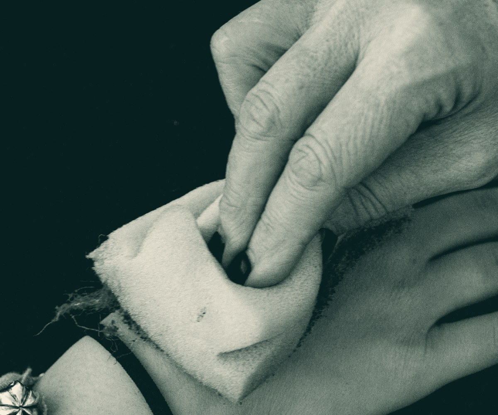

Where Did the
Touch Go?
Are you being touched,
or are you feeling it?
Juliette Karaman
Where Did the
Touch Go?
Juliette Karaman
Why you stopped feeling it,
and the small, structured way back
feelfullyyou.com
© 2026 Juliette Karaman. All rights reserved.
Touch Base® is a registered mark of Juliette Karaman.
Reader copy, 22 November 2026. Not for sale or distribution.
This book shares one woman's practice and story. It is not medical or psychological advice, and it does not replace care from a qualified professional.
✦
Before you start
Are you being touched, or are you feeling it?
This is a short book, and it is not a fix.
It will not hand you three lines to say in the kitchen tonight. It will not tell you how to be more spontaneous, how to plan a better date, or how to want him more.
It asks one question. Where did the Touch go?
Underneath it sits a quieter one, and it runs through every page. Are you being touched, or are you feeling it?
Then it stays with your answer long enough for your body to start telling you the rest.
Which one is you?
Read these four slowly. Stay with the one that makes something in you go quiet, or tighten, or soften. That is usually the one.
Almost nothing is arriving. The half-second before contact, your jaw sets and your back tightens. You already know how this goes before it has started. Start with Chapter 2, The Brace.
It arrives, and then you go. It lands at the beginning. Somewhere in the middle you are gone. You come back at the end and realise you missed most of it. Start with Chapter 3, The Fade.
You feel it, and you cannot ask for it. You know when something is not quite right. You know it while it is happening. Then you work out how to say it without it landing as criticism, and the moment has gone. Start with Chapter 4, The Reach.
All of it reaches you, and you want more. Touch already works, at least some of the time. What you notice is a ceiling. You feel that more depth, more sensation and more aliveness is possible. Start with Chapter 5, The Melt.
If you have taken the quiz, you already have your answer. It is in your inbox.
If two of these sound like you, start with the earlier one. The earliest place you get stuck is usually where the rest begins.
Read your chapter first. Then read the others in any order you like. Each one will show you something about yourself, and about the people you love.
If you are single, nothing here is closed to you. Every practice has a version you can do on your own, and the parts about a partner show you what to ask for when someone arrives.
If you are reading this for the person you love, or with them, Chapter 11 is written to him, and to the two of you.
A word about he and she. I write he and she because most of the people I work with are women and men. Change the words to fit you. The body works the same way.
How to read this
Go slowly.
This is a book about the body, and the body does not hurry. Read a chapter, then put the book down and let it settle before you pick it up again.
A note before you go on. This book talks about Touch, sex, loss, death and, in a few places, trauma, including childhood sexual abuse and rape. Some of the stories are hard. Read them when you have the space.
If anything in these pages stirs something big, do not push through it. Stop, and go to Touch Base.
Touch Base is the practice I made for exactly this moment. There is a video, an audio and a 31-day tracker, which is a small taste of what it is like inside Scrumptious Confessions. You press your thumb against your forefinger and slowly trace every ridge, while my voice reminds your body what it most needs to hear: there is no tiger in the room, and no one here to hurt you.
Do it somewhere that is actually safe. A room where you can close the door. A chair, your feet on the floor, nobody behind you. Your body cannot learn it is safe while part of it is still watching the door, so choose the place first.
Then come back when you are ready. The book will still be here.
Scan the first code for the video, the audio and the tracker. Scan the second to listen only.
I am glad you are here.
Warmly,
Juliette
✦
1
Yesterday
Then notice which of them you felt.
She told me about the calf first.
She was lying on the reformer, halfway through a class she takes twice a week. The instructor cupped the back of her calf to correct her alignment. His hand stayed a second longer than the correction needed.
Something moved up through her body that she had not felt in months.
Warmth. A loosening behind the sternum. The quiet of a body that has, for one second, stopped guarding itself.
She drove home unsettled. Her husband was in the kitchen. He came up behind her and put his hands on her hips, the way he has for nineteen years.
Her whole body closed like a hand making a fist.
She said to me, on the call, “Why can I feel it with a man whose surname I don’t know, and not with the man I have loved for half my life?”
Then, before I had said anything at all: “What is wrong with me?”
Nothing is wrong with her.
I want to say that first, because there is a good chance you recognise some part of this. You might be her. You might be him, standing in a kitchen with your hands suddenly feeling like the wrong thing to be holding. Some weeks you might be both.
What her body noticed
All day, at every point of contact, a body asks one question. It asks it below thinking, faster than any thought she could narrate.
What does this cost me?
With the instructor, the answer was nothing. No history. No outcome to protect. Nineteen years of meaning were not loaded into one hand on one calf. There was nobody to disappoint and nothing to lose. So her body stayed loose, and the pleasure could move, because the pleasure was free.
With her husband, her body asked the same question and got a different answer.
His hands carry everything. Every time she has frozen and watched his face fall. The question she can feel inside the Touch, even when he does not mean to ask it. The price of getting it wrong again.
Her body read his hands as high stakes. From the outside that looks like she has gone off him. From the inside it is close to the opposite. The more a Touch matters, the more carefully the body guards it. The man she loves most gets the most guarded body, because he is the one she cannot afford to be wrong with.
The loop
He noticed she lit up at the party. He noticed the instructor, the brother-in-law, the man who fixed her laptop. He did the maths and the maths was unbearable.
So he did one of two things.
He withdrew, to protect himself from the next refusal. Or he reached more, harder, trying to make the spark by effort.
Both raised the stakes. Both told her body that his hand was the one that came with weight.
She watched his face fall, and decided she was failing him. She stopped reaching too.
Each of them was reading her body as a verdict. He had decided she was finished with him. She had decided something in her did not work. Neither of them knew they were standing inside the same loop.
One couple had not had sex in twenty-three years. He had stopped reaching long ago. She could still cry at a film, still feel a stranger’s kindness land in her chest, so she knew her body was alive. What she could not do was receive him. Twenty years of every Touch from him meaning here is the thing I keep failing at had buried it.
Three months. We took the stakes out of his hands one practice at a time. She called what happened a second honeymoon.
I tell you that because I want you to know where this can go. A body that has closed is waiting for the Touch to cost less.
Yesterday
Before you read any further, I would like you to do something small.
Think about yesterday.
What Touch actually happened?
Be honest, and be small. Count the functional ones. A peck at the door. A hand on a shoulder while someone passed the salt. A child leaning against you at the sink. The hairdresser’s fingers. Someone’s elbow on the train.
Then notice which of them you felt.
Some of it you will have felt completely. Some you will not remember at all. Some arrived, and by the third second you were somewhere else.
You do not have to fix any of it. You do not have to decide what it means.
Just notice what your body did with an ordinary day.
Then ask the question this whole book comes back to. Of everything that touched you yesterday, were you being touched, or were you feeling it?
How I learned to read a room
I did not set out to be a Touch expert. I set out, at about four years old, to make a room feel better.
I was a little girl in Holland, and I could feel the tension between the adults before anyone said a word. So I made my grandmother a drawing. I handed it over, and I watched the whole room lift.
That is the first thing I ever learned about Touch, though I would not have called it that for fifty years. If I gave something, the room got lighter. If the room got lighter, I was safe.
If I gave something, the room got lighter. If the room got lighter, I was safe.
I was seven when my uncle touched me. I did what a seven-year-old does. I went to my mother.
She said: “Oh, that’s just what men do.”
She said it because an uncle had done it to her too, at about the same age. She did not protect me, and she was not being cruel. She handed me the only thing anybody had ever handed her.
My mind filed it away. My body took it in as a rule. This is normal. This is what you put up with. Nothing in my body told me otherwise for a very long time.
At fourteen, with no licence, I drove my mother to hospital. There was an empty bottle of sleeping pills beside her. They pumped her stomach. When she came round, she only had eyes for her lover. I somehow drove myself home.
I did not call my father until the morning. He was away with family, who were trying to mend things. You will meet the rest of that night in Chapter 9.
That was the moment I recognised that I needed to take care of a lot of people.
I got very good at it.
Years later I was married, with four children, still taking care of everyone. One night our son asked whether he could at least try for boarding school, like his friends. I told him to ask his dad. His dad said, “That’s not what I had in mind for you.” I saw my son’s face fall.
We fought. My husband said, “Maybe we should get divorced.”
I did not sleep. I was torn between the family I had built and the woman I was becoming. By morning, it felt like twenty kilos had lifted off my shoulders.
We still loved each other. We walked into the lawyer’s office having already agreed the houses, the belongings and how we would share the children. Ten years later, every Christmas, we are all at one table, and he is still my best friend.
I divorced my husband without knowing why. My body knew.
I divorced my husband without knowing why. My body knew.
So I went looking. At 44, I was walking around in a red T-shirt that said “orgasm expert”. My eldest asked me, very politely, to make my profile private. His friends already thought I was a MILF.
It had been trying to tell me in other ways, too. You will hear about the half landing, and the vase, in Chapter 6.
That is why I ask you to start with yesterday and nothing grander. I have been the body in this story. I lived years inside a body that braced against the people closest to it, and I found my way back one signal at a time. It is where the way back begins.
There are four places your Touch can go. The next four chapters take them one at a time, and you will recognise your own.
✦
2
The Brace
There is no tiger in the room.
He comes up behind you at the kettle and puts both arms around you.
You are out of them before you have decided anything.
Your body did that. You watched it happen.
There is a half second afterwards where you are both just standing there. He says something light, so neither of you has to name it. You say something light back.
Then you spend the rest of the evening doing the arithmetic. He has done nothing. You love him. You have loved him through a great deal worse than a hug.
So at one in the morning, with the room dark and him asleep beside you, you type the thing you cannot say at the kettle.
Why do I pull away when he hugs me?
The half second
This is The Brace.
The half second before contact, your jaw sets and your back tightens. You already know how this goes before it has started. Your body has learned to anticipate.
From the outside you can look completely present. Inside, you are somewhere else entirely.
If you picked this chapter, almost nothing is arriving. A hand lands on you and your body has already left the room, or locked the door, or both.
I want you to hear something before anything else.
Whatever this is, it is not a verdict on whether you love him.
A whole room, in ten seconds
I watch this happen for a living.
I was once introduced on a stage by Lyn, who hosts Just Woman Live. She told a room of women that I am a Touch and intimacy expert. Then I walked on, and I said it back to them.
“Lyn has just given you my title. Touch and intimacy expert.”
Then I stopped talking.
I let the silence sit. It got uncomfortable fast.
“Yes. That one. Your shoulders have just crept up a centimetre towards your ears. Let them drop. Let go of whatever else just clenched, because something did.”
Somebody laughed. It was the small laugh that lets the pressure out of a room that has decided it is not safe to be serious.
Then I told them the cameras were rolling. Backs straightened, all at once.
Nobody decided to do any of that. Nobody had time to.
That is the half second. Your thought about the word came later. Your body moved first.
The kitchen
It happens to me, too. It still can.
Alex, my fiancé, reached for my waist in the kitchen. I was cooking, in my own rhythm. His hand rested there. Normal. Familiar.
My body reacted before my mind did. Shoulders up. Breath caught. A tightening low in my belly.
I was still standing there, but I was not there. I was eight.
Someone in my family had touched me inappropriately, and my body remembered it, in a split second.
Alex felt the shift. He paused. He could have pulled away and thought he had done something wrong. I could have smiled, and kept cooking, and overridden it.
Instead I said, “Stay.”
Everything in me wanted to get back to normal. To make it go away. So I said what was real. “I’m getting a flashback. My body is tightening.”
No story. No blame. Just what was real.
He stayed. He did not fix it, or apologise, or make it about him. He just stayed.
Something in my body started to soften its grip. Not all at once. Enough.
Later, when we were both grounded, he said, “Tell me what happened for you there.” I could answer from awareness, instead of reaction.
Intimacy wears down in the small moments. The ones where your body says something, and it either gets met, or gets left.
What your body is bracing against
A hug lasts about fifteen seconds. On its own it is almost nothing. A hand on your lower back weighs about half a kilo.
What your body answers is the next forty minutes it has learned to expect from the hand.
When Touch has meant one thing for long enough, the body stops reading the contact and starts reading the sequence. The hand becomes the opening move in something whose ending is already known. So the whole arc arrives at once, squashed into the second the palm lands.
He puts his arms around you meaning I love you.
Your body receives here we go again.
Both of those are true accounts of the same fifteen seconds.
I know how a body learns this. For years I was very good at being touched while being somewhere else entirely. I could be making a shopping list, planning tomorrow, waiting for it to be over. From the outside, nobody would ever have known.
Every time I tolerated a Touch, my body learned something. It learned that a hand arriving means brace. Get through it. Leave if you need to.
So years later, a hand I really did want, from someone I loved, landed on me, and my shoulders still climbed. My breath still stopped. My body was doing exactly what I had taught it to do.
The order a body says no
Your body does not start with the loudest thing it has. It says no in an order, and the order begins very quietly.
First there is a stillness nobody sees, including you. A fraction of breath held. A very small withholding.
If that gets read, it goes no further. Most of the time it does not get read, often because years ago you learned not to send it clearly.
So it goes up a rung. You turn slightly. You reach for the tea towel. You start a sentence about the bins.
If that gets missed too, month after month, the body stops spending energy on signals that never worked. It reaches for something bigger. A flinch. A recoil. A tightening you cannot talk yourself out of.
Then there is the quietest one of all.
You said yes when your whole body said not tonight.
You thought you were being kind. Your body logged something else. It logged, my no does not count here. You can override a no a hundred times with good intentions, and the body keeps the count, because keeping the count is its job.
After enough of them, wanting stops arriving. It does not do this to punish anyone. Desire only comes to a body that trusts its no will be honoured, because desire is the body offering itself, and a body does not offer itself where it has learned it cannot say stop.
None of this is a fault. Every one of these is an intelligent adaptation. Your body read the room and adjusted, the way bodies are built to.
She came to me certain it was her
That was the first thing she said on the call, before I had asked a single question.
“I think something is wrong with me.”
She had done the books. The date nights. A tantra weekend that made her cry in a good way for about a fortnight. Then her husband reached for her in the kitchen, her shoulders came up around her ears, and she smiled and kept stirring the pan, and thought, there it is again, the thing that is wrong with me.
Nothing was wrong with her. Her body was being accurate.
She had been sold spontaneity. Spark, chemistry, it should just flow. So when it went quiet, she assumed the love had gone, because the love was supposed to keep it flowing all on its own.
That story has it backwards. The body does not open on command, and it never did. It opens inside a container it trusts. Clear walls. A way in. A way back. A guarded body does not let go in open space. It lets go inside structure.
One of my VIP clients came to my house for a day and said something I have not stopped thinking about. “When I’m in your house, or when I’m with you, I try foods that I would never dare try, because I just feel like I can. If I don’t like them, I just tell you, and I just don’t eat them. Normally, I wouldn’t do that.”
Food. Nothing to do with Touch. Which is why it is the best proof I have. She was feeling more because she was somewhere she could try a thing, stop it halfway, and nobody would make her finish it.
That is what a container is.
Two ways desire arrives
There are two ways desire turns up.
Some people feel it first. The wanting appears, out of nowhere, and then they act on it. That is spontaneous desire.
Other people feel it second. The wanting arrives after the Touch begins, once they are relaxed and the stakes have dropped. That is responsive desire.
Both are normal. Both are healthy.
I once told a couple that it can take forty minutes for a woman’s body to warm up. He said, “Oh yeah, I don’t have time for that.”
Her body answered before she did. I’m not good enough. I’m not quick enough.
Her body answered before she did.
Nothing was wrong with her. Her way in takes longer, and desire often arrives after the Touch begins.
The culture only ever shows you the first kind. So a woman whose desire is the second kind waits for a feeling that was never going to arrive on its own, and decides something is wrong with her.
If your desire is the responsive kind, it will not come on command. It comes inside a container it trusts. In Chapter 7 you will find out which kind you are.
Three things that do not work
You have probably tried all three.
Pushing through. You let it happen and you go somewhere else while it does. Every time, you teach your body that its signal changes nothing. Next time it has to come in louder, or earlier.
Explaining it to him in the moment. His hand is still on you, you are flooded, and you are trying to build a sentence that will not detonate. It comes out as a verdict on him. He hears one.
Waiting for it to pass. Desire does not drift back on its own, because nothing has changed about what your body is predicting. Every month of waiting is another month of rehearsing the same forecast.
What does move it
It is smaller, and much less romantic, than anything you have been sold.
You take the destination off the table.
Out loud, for a fixed length of time, nothing is allowed to lead anywhere. That is the whole instruction.
Once the body stops predicting the arc, a hand goes back to being a hand. It can finally be read on its own terms, instead of on years of forecast.
Here is a way to start. It takes three minutes.
A Touch Date with a partner Set a timer for three minutes. Agree before you begin that nothing will lead anywhere, and that either of you can stop at any time. Then sit, or stand, with a hand resting on an arm or a shoulder. Nothing more. When the timer ends, stop, and each say one word.
That is a Touch Date. It is the smallest one. If you can, do the self-touch date below first, for a few days, and then ask for this one.
A self-touch date Do Touch Base. Thumb to forefinger, slowly, every ridge. Then place one hand on your own forearm for three minutes, with nowhere for it to go.
Either way, for the first week, do just one thing. The next time something touches you, notice the half second before you decide anything. Where does your jaw go? Your shoulders? Your breath?
Do not change it.
Just notice. A body that has been overridden for years has a great deal to tell you, and it will only start once it learns that someone is listening.
What to expect
It gets louder before it gets quieter.
A body overridden for a long time, given a real opening, tells you the size of the backlog all at once. You might cry, or go very still, or feel something you had stopped expecting to feel. Nothing has gone wrong when that happens. That is a channel opening after a long time shut.
Then it gets specific. The pulling away stops being one solid wall and starts arriving with information attached. That kind of contact, at that hour, with that behind it. Specific is workable. Specific can be asked about, and asked for differently.
Last, it gets neutral. A hand lands on you and it is just a hand.
The woman from the call came back to me some weeks into this. The first time her husband reached for her in the kitchen and her body did not brace, she cried. This time it was not the tantra-weekend kind that fades in a fortnight. Something had moved in the part of her that decides.
Another woman wrote to me, “I feel softer and more relaxed. I’d forgotten I’d been braced for years, until I finally felt myself soften.”
If you are the one who reached
You might be reading this chapter for her.
You reach, she tightens, and you pull back before you have chosen to. Your body reads her closing as a verdict on you. You were never taught what is actually happening in that moment, so you drew the only conclusion available.
Here is the part nobody tells you. You already know how to do this. Think of how you are when a child you love goes tense. You soften. You move closer. You stay.
The difference is that with her, your own body gets activated first. Her closing touches something in you. The work is to notice your shoulders come up, and to stay anyway.
Your steadiness is the safest thing you have.
Questions I get asked about The Brace
Does the flinch mean I don’t want my partner?
Very often it does not. Couples describe a kind hand, a person they love, and a body that braced anyway. Notice which Touches your body receives well. The ones you saw coming, or the ones that appeared from behind? That tells you what your body is asking for.
Why do I cringe when my partner touches me, because it always leads to sex?
That is pressure. Your body has learned to read every Touch as the opening move of something bigger, so it braces before the hand even lands. Even holding hands stops being just holding hands once every Touch has a destination. The pattern is learnable, and it is changeable, without cutting Touch out of your relationship.
Why doesn’t “just say no” fix it?
Because the bracing happens at the first Touch, before there is any choice to make. By the time you say no, you have already flinched.
Why can’t I stand to be touched after having a baby?
Your body has spent all day being climbed on, fed from and held by someone who cannot reach for anything themselves. By evening there is no bandwidth left, not even for the hand you love. It is not who you are now. It is where your body is, and it moves.
The way back
Your body braced because it learned something true, once, in a particular place, with a particular person or no person at all. It has not yet been told that this kitchen, this man, this moment is different.
It can learn something else.
Are you being touched, or are you feeling it? In The Brace, very little is arriving, and that is your starting point, not your verdict.
Chapter 8 and Chapter 12 show you how, step by step, with a plan for your first 31 days. For now, you have the half second, a timer and a way to begin.
If anything in this chapter stirred something big, stop and go to Touch Base. Do it somewhere you really are safe. There is no tiger here.
✦

3
The Fade
Registered. Filed. No charge.
His hand arrives on the small of your back.
You feel the weight of it. The warmth of it. Nothing else.
You used to feel that hand in your knees. Tonight it lands like a coat someone has draped over your shoulders.
Registered. Filed. No charge.
You lie there afterwards, running the maths on the last time you actually wanted it, and you cannot find the date.
So you ask the internet the thing you cannot ask anyone who loves you.
What is wrong with me?
The wanting went quiet first
This is The Fade.
Nothing has gone wrong, and nothing braces. Touch is still on offer. Your body just does not reach for it any more.
It starts. Your body picks it up. Then somewhere in the middle, you are gone. You come back at the end and realise you missed most of it.
The wanting went quiet before the Touch did. So even when it is right there, there is no pull towards it. Just a flat, polite yes.
People read this as not caring. What it usually is, is a body that stopped expecting anything from Touch a long time ago.
The internet gives you two answers, and both read like a sentence. Your hormones have gone. Or you have fallen out of love and should leave.
I have sat with many women in exactly this place, and it is almost never either one.
Your desire is still here. The room ran out.
Here is what nobody names.
Your body has a window. A range it can stay present and feel inside. Stress, exhaustion and years of bracing all shrink that window, until there is barely any room left in it.
Dan Siegel gave it a name, the window of tolerance, and in Somatic Experiencing it is the whole basis of how we build capacity.
When Touch arrives at the edge of a window narrowed to a slit, your body does the only intelligent thing left. It checks out. It goes numb, because feeling has become more than it can hold right now, even though nothing in you has gone.
You know the signs, even without names for them.
You feel the hand land, and register it from a long way off. You leave your body during sex and plan tomorrow’s list. You look relaxed at dinner while something in you stands guard.
That is a body with no spare room, protecting you the only way it knows.
Desire cannot move into a body that has no room.
Desire cannot move into a body that has no room.
First you make room.
What makes it worse
The weekend away. The lingerie. The big date night you are both secretly hoping will fix it.
You are asking a body with a slit of a window to throw the doors open. It cannot. It goes quieter still, and you both go to bed quietly defeated, more certain than ever that something is wrong.
Love is not desire
Love and desire are not the same thing. Nobody taught you the difference.
Love is not desire.
You can love someone completely and feel nothing when his hand lands. Desire does not come back by forcing it. It comes back when your body trusts that a Touch can start, and stop, and ask nothing of you.
Move it to the morning
Date night at nine o’clock, after the day you have just had, is a scheduling error dressed up as romance. A tired body does not open.
Try a morning instead, with a timer, and the phones in another room. You will meet my own Sunday mornings in Chapter 8.
Capacity is built like fitness
I keep saying it is like riding a bike, or going to the gym. You do not start with a five-hour session.
You start small, and you build, so that you have a win each time. The mind, the psyche and the body all learn the same thing.
Oh. I can do this.
Three minutes is the right size. It is a win your body can recognise, and the next one builds on it.
Start smaller than you think
The way back is the opposite of a grand gesture. You go so small it feels almost silly.
Try this tonight.
A Touch Date with a partner Ask him for three minutes of Touch that is not allowed to lead anywhere. A hand on your arm. Your back stroked. You receive, and that is all. Nothing to perform, nothing to give back.
While it happens, do one thing with your attention. Do not chase whether it feels sexy. Notice what your body is doing, in plain physical facts. Warmth here. Tightness there. A flutter. A held breath. A wish to pull away.
If your body wants to flinch, let it, and notice that too.
When the three minutes are up, stop on purpose, while it still feels safe. Tomorrow, three minutes again.
A self-touch date Do Touch Base first. Then rest one hand on your own forearm for three minutes, and notice the same plain facts.
You are widening the window that desire can walk back through. Feeling it can wait.
If it was electric once
If the beginning was electric and the quiet came later, there is one more thing worth knowing.
Some bodies learned early that closeness arrives with intensity. A spike in the chest, then a drop. Reach and withdraw, want and withhold. Those bodies come to read intensity as love, and quiet as absence.
So when the storm of the early months settles, and someone is calm, kind and still here, the body scans for the old charge, cannot find it, and calls the flatness the end of love.
I know this from the inside. For decades I did not understand what my body was holding. After my children were born I could not bring myself to have sex, or it took a great deal to get anywhere near it. I would cry afterwards, and neither of us knew why. My body was running a programme I could not see, and it did not care that Karim was a safe man.
The quiet months can be the first time a body has ever shared a room with someone safe, and had no idea what to do with that. Many of my clients find tolerating safety the hardest thing of all.
What to expect
The first week will seem too small to matter. That is the point. A body that has narrowed for years opens on evidence, one three-minute piece at a time.
Then you start to notice things. A warmth you had stopped checking for. A moment where you stayed, instead of leaving halfway through.
One woman I worked with could not receive her husband’s attention without turning it straight back onto him. After an attunement with me, she was no longer afraid of his attention. She began directing him in ways she had been too shy to ask for.
Her desire came back when the window got wide enough for it to walk through.
Another woman had not been intimate with anyone for over five years. After one Touch exercise, something flickered back on. She found herself dancing. Humming. Wanting to touch.
If you are the one wondering where she went
She ran out of room.
Do not ask for more. Ask for three minutes that lead nowhere, and let her have all of it.
Questions I get asked about The Fade
Why do I go through the motions and check out halfway through?
Checking out is your body’s way of staying safe while keeping the peace. It arrives at Touch it has not agreed to yet, so it performs the motions while you leave the room inside yourself. Within a minute of him reaching for you, you are expected somewhere your body has not arrived at yet. It is still at the sink, still running the day. It never got the chance to catch up.
Trying harder to stay makes it worse. Every attempt to force presence teaches your body that its absence will be overridden too. Give it Touch in doses small enough to stay for, with a real way out.
Why am I never in the mood, but I enjoy it once we start?
Most likely your desire is responsive. The wanting turns up after Touch and closeness begin, instead of before. It is a normal way for a body to be wired. Stop waiting for the mood to arrive first. You will read more about it in Chapter 7.
Is it normal to feel nothing when my partner touches me?
Yes. It is so ordinary that it no longer surprises me when a woman tells me. Feeling is a capacity, and a capacity that never gets used goes quiet. Most of the women who tell me this are not numb everywhere. They have spent years reading everyone else’s body instead of their own. The sensation is still there. The line back to you is what went down.
The way back
You already want it.
Staying is the part nobody built.
Are you being touched, or are you feeling it? In The Fade you are being touched, and the feeling comes and goes. Your question is how long you can stay.
Chapter 8 builds it, and Chapter 12 turns it into your first 31 days. For now, you have three minutes.
✦
4
The Reach
Your body knows what it wants. It has been waiting to be asked.
It is eleven at night and he asks what you like.
Your mind goes completely blank.
You know your body. You have had pleasure before, plenty of it. Somewhere between fourteen and now, the question stopped being asked, or you stopped believing you were allowed a real answer.
So you laugh it off. “Surprise me.” “Whatever you’re doing is good.” Some of that might even be true.
Underneath it is a small, cold thought you would never say out loud.
I don’t actually know.
The Reach
This is The Reach.
You know when something is not quite right. You know it while it is happening. Then you work out how to say it without it landing as criticism.
By the time you have worked that out, the moment has gone.
So you do the other thing. You reach. You are the one who starts it, nearly every time, and you are tired. You clearly want him. Wanting alone, every single time, has started to feel like a job. The Touch is there if you ask for it. The reaching is not mutual, and some part of you has started keeping score.
You are the one closing the gap. Every time.
Touchblind
There is a word I made for the blank, because old pain lingers longest where it cannot be named.
Touchblind.
It means losing contact with your own needs so completely that you genuinely do not know what you want. It happens to a body that spent years reading the room for everyone else’s cues, until the wiring for its own went quiet.
It usually starts young. A house where feelings got managed rather than met. Where saying no cost you warmth. A culture with unwritten rules about what good girls want, and how much of it they are allowed to say. A first experience where your real yes or your real no cost you the room’s approval, so you learned to read everyone else’s signal and let your own go quiet.
None of that is a flaw in you. It is a body doing exactly what it was trained to do.
Touchblind is a symptom, never a fact. It describes what a body did to survive. It says nothing about who you are.
Under the blank is a body that still knows exactly what it wants. It stopped being asked.
You cannot think your way back to a signal that was trained out of you. You have to go and find it, in the body, where it has been waiting.
The ledger
You are extraordinary at giving. Nobody ever taught you how to receive.
You sense what everyone needs before they ask. You say yes at eleven at night because a no feels like taking something away from him, and taking has never been your language. You make the right sounds. Some part of you watches from a small distance, keeping time, checking whether this counts as enough.
When giving is your whole way of staying connected, sex turns into one more thing you manage. It joins the list with making his coffee and remembering his mother’s birthday. A body that spends all day supplying what is needed has very little left to find its own wanting, because wanting was never the assignment. Keeping the connection steady was.
You do not have low desire.
You do not have low desire. You have an unpaid receiving account.
You have an unpaid receiving account.
Desire needs somewhere to land. A body that has given for years without letting anything in has nowhere for wanting to arrive.
I have a name for this pattern, and you will meet it in Chapter 6.
Yes, or nothing
At a live event, in the orangery of a pub, I asked a room of women to run a fingertip along the inside of their own wrist. Slowly. Every time they felt something, they were to say yes out loud. The strokes they could not feel, they left alone. It takes between three and five minutes.
I demonstrated. I gave them the diner scene from When Harry Met Sally, the full YES. YES. YES. The room roared.
For some women it was a quiet yes.
For a lot of them it was nothing at all. What am I even feeling here? Is there anything there?
Over two events, four women came and told me they must be frigid.
One of them was the MC. She was running the evening with a microphone in her hand, and she was good at it. She said it with a camera pointing at her. I didn’t feel anything. I think I must just be frigid. She had said the same thing to me the time before.
Nobody in either room was frigid. The mistake was mine.
I had asked women to feel something in a room full of strangers. A room full of strangers has no edges, and a body only stops scanning when it can see the edges of the room it is in. Their bodies were doing exactly the right thing. I had handed them an exercise that needs safety, in the one place that could not give it.
A word about that word
For centuries, frigid was a word about men who could not perform. Somewhere along the way it was handed to women. By 1952 it had a place in the psychiatrists’ manual, as a term for a body reacting to the mind, and it stayed there until 1980.
In 1998, an Australian urologist called Helen O’Connell published dissection work that showed a structure far larger than most textbooks had drawn.
So for decades, women were diagnosed as the faulty part by people who had not yet looked properly. Nobody asked what room she was in, or whether anyone had ever asked her what she wanted.
The wiring was always fine. What went missing was the asking.
If you try the wrist now and get very little, you are far from alone, and nothing about you is wrong. Your body turned the dial down to look after you. Try it somewhere with edges. A room with the door closed, your back against something solid.
Yes, please
I once dragged a suitcase full of tea up a flight of stairs at a railway station.
Ten kinds of tea, most of them herbal. Cups with saucers, chunky mugs, thin-rimmed ones, because some women will only drink from a thin rim, and they are right. Honey. Agave. Oat milk, soya, coconut, lactose free. A tub of homemade tomato soup, because apparently I cannot help myself.
I got to the foot of the stairs and stopped.
A man came up behind me and asked if he could help. I said, “Yes, please.”
I did not say no, I’ve got it, a sentence I have said a thousand times while not having it. I did not have it. He carried it up.
After that I stopped waiting to be offered. I asked. Another man took it down the other side. Another one on the tube. Every single one of them lit up. “Oh my God, you’ve made my day. Thank you so much, it was so heavy.” A man got to be useful for a minute, and it visibly improved his morning.
Then a woman at the retreat asked for lemon.
I had no lemon.
I had planned for every preference I could imagine, and I still could not guess hers. You cannot guess. Not when you love someone. Not when you are trying your hardest. Not when you have brought five different f*king milks.
You have to ask.
Four small things to try
Same place, two ways
Begin with Touch Base. Thumb to forefinger, slowly, every ridge, for two minutes. Say inwardly, There is no tiger in the room, and no one here to hurt me.
Then choose one place on your own skin. Your forearm is a good start. Touch it one way, slow and barely there, for thirty seconds. Notice what happens. Does your breath change? Does your skin ask for more, or ask you to stop?
Now touch the same place a second way, firmer, with more decision in your hand. Thirty seconds again.
One of those will have landed more than the other. That is your body answering a question out loud, perhaps for the first time in years.
Try three or four different places. Some will light up. Some won’t. You are building the first page of your own map.
I use Scrumptious Stroking, and my How to Feel Like a Woman Again course, to work with this. It is the hardest and most useful part. A woman finds she feels very little in one part of her body, and a great deal in another. For some women that was triggering.
It is also the way in. You start where you can feel, and move from there to the part that cannot yet, a little at a time. That is called titration.
The cup of tea
This one looks like play. It rehearses the exact muscle that asking for Touch draws on.
Describe your ideal cup of tea in full detail. Skip the reasonable one and describe the one you actually want. The mug, the tea, how hot, how long the bag stays in.
Ask him to make it exactly as you described, and to say it back to you before he moves, so you know you were heard. It is the step everyone skips.
I once asked a co-leader to mirror back my order. She looked at me and said, “Oh, shit. I didn’t prepare for that. You didn’t tell me.” She had not been listening. She had been waiting, halfway to the kettle in her head, to be useful.
If you are on your own, make it for yourself, and notice how unusual that feels.
Before you drink, pause. Is it right? If it is slightly off, even when it is almost perfect, say so. “Thank you, I love this, and I would love it even more if the bag came out a touch sooner.”
Notice the flinch that rises as you ask for the small correction. For many women that flinch is the whole pattern, alive in a kitchen, over a cup of tea. It is a place to practise wanting something and saying so, where the sky does not fall.
I once did this with a couple on national television. She wanted more than “wham, bam”. He heard “rose petals”, and her body collapsed. They could not agree on a single thing.
So I took them to the kitchen, and I asked him to make her a cup of tea. Extremely specific. Which cup, which tea, which milk. Before he could move, she jumped in and made it for him, exactly the way he wanted it, exactly as he had instructed. When he received it, he said, “Yeah. Not bad.” No feedback. Nothing about any of the instructions I had given him. He simply was not interested.
She was involved, and she was happy to be. He was not. So I took it further. “What about you feed her?” I wanted him in it. I asked her whether she wanted to close her eyes, and she did.
So he fed her a strawberry, and it was a fiasco. He pushed it at her, smudged it around her mouth and shoved it into her face. She opened her eyes and looked at me, wide, as if to say: that was not sexy.
So I took a berry, and I showed him how it is done. First I asked her, “May I touch you, and feed you the berry?” She said yes. Her shoulders dropped. I took my time. I had her close her eyes, and I told her, slowly, to look down. After she had taken the berry into her mouth, I touched her chest, and I said, “Good girl.”
She exploded. “Oh my God, that was so sensational.”
It is not rocket science. It is seeing what her way into pleasure is, and seeing how unwilling he was to even try.
You can watch the clip, and try the practice yourself, free: app.feelfullyyou.com/taste/31-touch-points
That is the lesson. How conditioned we are about who gives and who receives. How we settle for “that is as good as it gets”. How uncomfortable it is to ask for exactly what we want.
Three things come up every time I run this.
“I am happy to make it for everyone else, but when it came to asking, I didn’t know what I liked.”
“I felt ungrateful adjusting her.”
“If I asked that of my husband, he would just say, make your own tea from now on, then.”
Not one of the men on that staircase resented being asked. Her husband is no worse a man than a stranger on a staircase. She has simply never put it to the vote.
I asked one room, “Would you want to be on your deathbed and then find out you have been making a cup of tea the way your partner does not like for decades?”
Nobody laughed.
Receive and Adjust
This one is from 31 Touch Points, my month of daily practices. Move the tea into the body. Set a timer for three minutes. The timer is not decoration. A thing with a clear end is a thing a body will relax into.
One of you touches the other somewhere completely unsexual. A forearm, the back of a hand, the scalp. Nowhere this is heading. For three minutes the receiver adjusts out loud, in real time. Slower. Firmer. A little higher. Stay there. Lighter. Yes, like that.
The giver says nothing and takes no offence. The giver follows. Then swap.
On your own, do it on your own forearm. Do that first either way.
Say it out loud
I asked the room one question. Tell me how you want to be touched. Everyone answered at once, so nobody could hear anybody.
Mouths opened and nothing came. To say how you want to be touched, you first have to let yourself know, and most of us were quietly taught not to.
Some women said “gently.” Gently is a mood. A request has detail.
I want your nails on the inside of my wrist, about two centimetres up from the top of my hand, running maybe ten centimetres up my arm. Ever so slowly, upwards. Then stop, and hold.
Or: I want you to push my hair behind my ear, and slowly put your lips on the outside of my earlobe.
Say yours out loud, in detail, to an empty kitchen. You will hear yourself say it. That is the point.
The more you say out loud what you want, the more likely you are to get it.
What to expect
It does not resolve in one night. Something moves the first time, though: the muscle of asking your body a question and waiting for its answer, instead of the one your head hands you first.
After weeks of this, you stop performing your pleasure and start reading it. You stop needing someone else to tell you what you like, because you have started asking your own skin, and it has started answering.
Zeinab, in Beirut, told me afterwards, “I’m no longer looking to others for the answers. I now trust myself.” Her marriage rekindled. She asks for what she wants now, without fear of being too much.
Questions I get asked about The Reach
How do I ask for the Touch I want?
Adjust it while it is happening, in plain words. A bit slower. A bit to the left. Keep adjusting until it is just right. Asking is a skill, and it starts with saying yes out loud when something lands.
A woman in my room once told her husband exactly what she wanted. A strawberry, fed to her from his mouth. He pulled a face. “Oh no, that’s disgusting.” A hard no, in front of me.
She giggled, and I watched what the giggle was doing. Her body was working out the sum. I asked for what I want, and I can’t have it.
So I slowed everything down. I asked her permission. I read her body. Often that is what is missing. The asking for permission, and the slowness.
I start couples with asking for small things outside the bedroom, because once that works, the same asking can move into Touch.
I already know what is wrong and what would help. Why can’t I make myself act?
Knowing was never the missing step. Acting on it means admitting the relationship is not fine as it is. A common cover story is waiting for him to change first. That keeps you in motion without moving, and it keeps the decision in his hands. It was always yours first.
I hear this nearly every day. She already knows the fix. She agrees with me. She does not book it. Being afraid makes sense, and it is allowed.
If you are the one who needs Touch and cannot say it
You rehearsed it in the shower and it still came out wrong.
You wanted to say that you miss being close to her. That you would take a hand on the back of your neck while you cooked and be full for a week. What she heard was more sex.
She is not being unfair. For a long time, a hand from you has come with a destination attached. Her body has learned that if she receives it and does not travel there, there will be an atmosphere to manage later. So she stopped receiving.
Do not try to explain the need. Prove the direction.
Reach with nowhere to go, and then actually go nowhere. A hand on her shoulder as you pass behind her. A palm flat between her shoulder blades. Your fingers brushing hers as you hand something over. Then leave, without a hopeful face waiting to see how it landed.
Do this for a fortnight before you say a word.
One couple I worked with, Chris and Leila, with names changed, had both privately decided they were done. Weeks in, he rested his palm between her shoulder blades while she stood at the counter. He said nothing. He lifted his hand before she could do anything with it. Her shoulders dropped half an inch. Then her jaw, a beat behind. Some weeks after that, her hand landed on his back on its way past.
Once there is evidence on the table, say it once, as information.
I want to tell you something about me, and I’m not asking you for anything tonight. Touch is how I feel connected to you. A hand on the back of my neck, your feet on me on the sofa, being leaned on. I’ve been going without it, and it’s been making me lonely in a way I didn’t have words for. You don’t have to do anything with this. I just wanted you to know it about me.
Then stop talking.
The way back
Your body knows what it wants. It has been waiting to be asked.
Are you being touched, or are you feeling it? In The Reach you are feeling it, and the question becomes whether anyone has ever asked you.
You have been closing the gap alone for a long time. Chapter 8 shows you how it becomes shared, and Chapter 12 gives you the plan.
✦
5
The Melt
Nothing went wrong on Tuesday. Her body was paying for Sunday.
A look across the kitchen.
Your own hand on your own arm.
Most of what passes other people by reaches you.
It is good, and you want more
This is The Melt.
You already have Touch, intimacy and connection that works, at least some of the time. Nothing has gone quiet. So the restlessness is hard to explain, even to yourself.
What you notice is a ceiling. A sense that depth, sensation, pleasure and aliveness could go further than they do now.
You might feel a little guilty about wanting it. People with a lot to be grateful for often do.
Here is the thing to hold on to. Nothing here needs repair.
The question at your end is range.
Range
Range is how much you can feel, and how long you can stay inside it.
In Chapter 3 you read about a window, the space your body can stay present and feel inside. Yours is already wide. Range is what happens at its far edge, when something good starts to intensify, and you decide without deciding whether to stay.
Most of us leave right when it gets good. A thought arrives. A joke. A sudden need to check something. Your body steps back from more than it is used to holding.
Remembering a part I had shut down
I lost half my body weight, twice. Then I took burlesque.
I walked in heels. I swayed my hips. I remembered a part of me I had shut down.
More does not have to be a big gesture. Sometimes it is a hip, moving.
Three kinds of more
The more you are reaching for is your own. It tends to take one of three shapes.
Receiving deeply, without turning your attention back to them.
You feel what is happening, and then you start managing the other person’s experience of it.
Feeling deeply, without needing to manage what happens next.
You have the sensation, and then you plan the next move.
Staying all the way through, instead of leaving right when it gets good.
Your body is in the room. You are not quite.
In Chapter 6 you will find out which one is yours. For now, notice which sentence makes your chest answer.
What opening costs
There is one thing nobody tells you about wanting more.
When you open wider than usual, even into something good, your body can close afterwards to catch up.
It was a Sunday. The children were at her mother’s. She put her head on his chest during a film neither of them was really watching, and left it there. Later, in bed, she let him all the way in. She looked at him and stayed.
On Tuesday she answered him in one word.
On Wednesday she flinched when his hand landed on the small of her back at the sink.
Nothing went wrong on Tuesday. Her body was paying for Sunday.
A body can only hold so much openness at once. Open past the edge of it, even into something good, especially into something good, and it closes to catch up. It goes back and checks the locks.
A body can only hold so much openness at once.
She was as surprised by the cold as he was. She could not have told him on Sunday night that Tuesday was coming.
If you are the one who got Sunday
You will want to chase it. Do not.
Reaching harder reads as pressure at the moment she has the least to give. Going cold back tells her the door only stays open if she performs. Asking what is wrong, and then asking again when “I’m fine” arrives, adds the pressure of a test to a body already over its limit.
Stay close enough that she can feel you have not gone anywhere, and far enough that she is not being pressed. Let her be quiet without making her pay for it with your face.
If your patience runs out, say it once. I’m finding this week hard. Then stop talking.
That week her body reads you more than it reads your words. If you stay steady while she recovers, you become the thing she can come back to.
The only real question is whether the door is still open when she does. That part is yours.
Stay one breath longer
Here is how to widen your range, and it is small.
Wherever you would normally let go, stay one breath more.
In a hug, stay past the point where you would normally pat and pull away. Let a goodbye kiss linger. Stay tangled together a moment before you roll apart. One breath is enough.
Then notice what you do right when it gets good. Do you talk? Tidy something? Reach for your phone? That is the exit your body built, and it was a clever one. You do not have to close it. Just notice it.
Do Touch Base first, every time.
When three minutes of Touch feels easy, grow it. Fifteen minutes. Then thirty. Let your body say yes at each step before you take the next.
What to expect
Weeks in, this is what I hear repeatedly. Touch that used to need translating just arrives now, direct. Sensation people had genuinely stopped expecting to feel again. A real, physical shift in how much of it actually reaches you.
One woman wrote to me after our sessions, “A lot more of my feelings about sexuality came up… For the first time, sex feels integrated with who I am, not just a set of activities.”
A hand arrives on the small of your back. You feel the weight of it, and the warmth. It lasts longer than you expected, and you stay. You feel it in your knees.
I am 58. I am post-menopausal, and I have the best intimacy of my life.
It did not arrive on its own. I put it in the diary, and I set a timer.
Questions I get asked about The Melt
What is the difference between sex and intimacy?
Sex is one way into closeness. Intimacy is the closeness itself, and plenty of people reach it by another road.
Ask me what intimacy means, and my answer has no sex in it. For me it is someone who reads my body signals so well that they know I want to be held in a certain way. Ask your partner the same question. Their answer might be looking into your eyes, seeing them sparkle, and feeling deeply loved.
Neither answer is wrong. A couple who has never swapped them is guessing at each other.
What is sensual Touch, and how is it different from sexual Touch?
Sensual Touch feeds the senses. Skin, scent, warmth and pace, with no finish line. Sexual Touch heads for orgasm.
Picture a blanket in a field, music playing, and your partner feeding you grapes. For one of you that is oh wow, give me more, please. For the other it is okay, when can we actually get to it? Same blanket, same grapes, two bodies, two ways in.
The way back
Nothing here to repair.
Are you being touched, or are you feeling it? In The Melt you are feeling it, and you want more. The question becomes how much of it you can take in.
The question at your end is range, and range grows the same way everything in the body grows. In small steps, with a structure that holds.
Chapter 6 shows you how you are wired. Chapter 8 shows you how to build, and Chapter 12 gives you the plan.
✦
6
Your Pattern
The moving is the tell.
Three sentences. One of them will make you wince.
You naturally pay attention to everyone else.
You’re capable. You know how to make things happen.
You want depth and real connection.
If you took the quiz, your Pattern is in your email. If you did not, read the next few pages and see which one gets you.
Pattern is how you protect
When a body does not feel safe, it spends its attention outside itself. On the room. On everyone else. On what is going on out there.
Your Pattern is the shape that takes in you.
Everyone runs one of three, underneath everything else. Each is a strategy that worked once and is still running. None of them is a flaw to fix.
Three differences that tell them apart
The quickest way to know which one you are. Three questions, and your answers tend to line up.
1. Where does your attention go when it gets close?
The Holder goes to him. His breathing, his mood, whether he is okay.
The Operator goes to the task. The angle, the pace, the time, what needs doing next.
The Wanderer goes away. Her body stays, and the rest of her is in tomorrow’s list.
2. What do you do when it is not quite right?
The Holder holds it together, and says nothing.
The Operator fixes it, and moves on.
The Wanderer drifts somewhere else, and looks relaxed while she does.
3. What do you reach for when you want more?
The Holder gives more.
The Operator does more.
The Wanderer wants more intensity: a stronger touch, a bigger experience, something new.
You may be reading this as him, or about him. The same three questions work for a partner. Watch where his attention goes, what he does when it is not right, and what he reaches for.
The quiz asks these very questions. If you took it, you will recognise them.
When touch isn’t quite right, you… Hold it all together (Holder). Fix it and move on (Operator). Drift somewhere else (Wanderer).
Think about yesterday. What touch actually happened? “Hands on me for a while, and my mind was somewhere else for most of it.” That is the Wanderer’s answer.
Your partner comes up behind you in the kitchen, grabs you and spins you round. “I’d go along with it, waiting to see where it’s heading.” The Holder is watching him, and not herself.
Your partner kisses the back of your neck while you’re doing something else. “I notice it and carry on with what I’m doing.” That is the Wanderer. “I turn round and kiss them back” is the Operator, who has already turned it into something to do.
The Holder
You pay attention to everyone else, first, always.
You are loving, attentive and dependable. The one people say they can always count on. You notice what people need before they have said it.
That follows you into Touch. You notice your partner’s breathing change before you have checked in with your own body at all.
Somewhere back, there may have been a moment when your own wanting changed something on someone’s face. A flicker. A pull-back. Small enough for an adult to miss. A child misses nothing. Children read a caregiver’s face to decide what is safe, long before they have words for any of it.
If reaching for what you wanted met that flicker, and reaching for what someone else wanted met warmth, the safer route got learned fast.
You learned early that being needed was safer than being wanted. So you got fluent in everyone else, and never learned to read yourself.
Your strength: you love deeply, and you really notice the person you are with.
What is missing: staying with what you want while someone else is in the room.
The Holder
What do I want when I stop tracking everyone else?
FEELFULLYYOU.COM
How you will know. You do something for him, he thanks you, and you say “of course” and you are already gone, already thinking about the next thing. The thank you bounced off before it arrived. You keep score quietly, because some part of you is counting what has gone out and noticing that nothing comes back. People call you generous, and you wonder why you feel so empty.
What the right Touch looks like. He thanks you and holds your hand for a moment, or holds your gaze, and does not let you move yet. You stay. You do not minimise it. You let it arrive.
You have already met some Holders. The woman in Chapter 3 who could not receive her husband’s attention without turning it straight back onto him. The woman in Chapter 4 who could tell you exactly how everyone else took their tea.
Another Holder came to me after spending more than a quarter of a million pounds on personal development. She is a relationship coach herself. She was convinced the problem was her husband. He was not following through. He was not showing up. She was tracking him, and not herself.
I slowed her right down. I taught her to read the first two lines of one of his texts, and to notice what happened in her body. She told me her body was angry. I said that is an emotion, and I kept bringing her back to the felt sense. The temperature. The tightening. The softening. Where it was.
After a while she noticed her jaw tighten when his name came up on her phone. A pit in her stomach.
She wrote to me afterwards. “You have given me the biggest gift. I now understand the felt experience of using my body as a compass.”
Then there is Katarina, a dermatologist. (Enough is changed here to protect her privacy. The pattern is not changed at all.) She knows more about the body, professionally, than almost anyone I have worked with. She can explain exactly what stress does to skin and to cortisol. She had never once been taught how to live inside her own.
She had gone on and on, the way capable people do, for years, until her body could no longer hold the line and she had to take time off work. Completely.
I asked her when she had last done anything with no purpose attached to it. Nothing to fix, nothing to optimise. She could not remember.
The same vigilance that keeps a Holder scanning for what needs doing is the setting her body uses for Touch, for rest, for someone’s hand landing on her with nothing attached. You do not run two systems, one for managing everything and one for receiving affection. You run one. Braced.
What moved it for her was small enough to feel almost silly. She started standing in front of her own mirror, looking herself in the eyes, and saying it out loud: “I love you.” Some mornings she wrote it across the glass in lipstick, so it was still there the next time she looked. Almost embarrassing, she told me, the first few times.
Her body had spent years being told, in a thousand indirect ways, that it mattered only for what it could do next. A woman looking her own reflection in the eye and meaning it is a different instruction entirely. Her nervous system took it in the way it takes in anything repeated enough: as evidence.
Weeks later, a hand landed on her shoulder and she did not catalogue what it was going to cost her. She let it stay there a moment longer than she would have a year ago.
The Operator
You fix things. You make decisions. You keep moving. When something needs handling, you handle it, and you are genuinely good at it.
That follows you into Touch too. It is easier to do something than to slow down enough to feel what is happening. Adjust the angle. Change the pace. Check the time.
Somewhere along the way, doing became the only feeling you trusted. If you could handle it, you were safe. If you could fix it, you never had to feel it.
I know this one from the inside. I was the Operator.
I got so good at managing everyone’s life that I could not feel my own body. I spent years helping children on the spectrum learn that connection was safe. I knew what every person around me needed, and I made sure they got it. The one body I kept missing was mine.
So my body forced me to stop. I woke up on the half landing of my own house, my wrist cut, in a pool of my own blood. An antique Chinese vase had shattered beside me. I had no memory of fainting.
Lying there, I made one clear decision, from somewhere underneath all the managing.
No. This is not how I die.
That was when I understood that being needed had never been the same as being felt.
I would love to tell you the lesson stuck.
Last year, at half six in the morning, I was standing in my kitchen, naked, frying bacon for a lunch nobody had asked me to make. Alex had said a friend was coming at lunchtime. I had heard “for lunch”.
He came downstairs and looked at me. “What are you doing, frying bacon naked?”
“Making you lunch. You said he’s coming for lunch.”
“That’s not what I said. I said he’s coming at lunchtime.”
One word. He never asked me to cook a thing.
Strange, I know, for a Touch expert who spends all day teaching people to hear what is actually being asked.
The moving is the tell. Something lands: a mood in the house, a form that needs signing, a silence at dinner that means somebody is upset. Before it has finished landing, you have turned it into a task with a next step.
I had a list on the fridge in four colours, because two stopped being enough. Nothing got dropped. Everyone told me I was amazing, and I got praised for it the way this culture praises a woman who never seems to need catching. Fixing is the one version of a stress response the world will pay you for. Terry Real calls it an old stress response, promoted. It does not go away. It gets a promotion.
Feeling a thing takes longer than fixing it. Fix it, and you are done by quarter past eight and out the door.
How you will know. You are good in a crisis, and people call you first. When someone asks how you feel, you tell them what you did about it. Pleasure turns into something to do well. Rest does not come easily, and slowing down can feel like the dangerous thing. You have kept going long after your body asked you to stop, more than once.
In bed, the Operator adjusts the angle, changes the pace, checks the time. I see it in men too, constantly: the one who cannot be next to his partner’s silence without offering a solution inside the first minute. Same engine, different paint.
Is that just being organised? I told myself so for eleven years. Organised is a woman who runs three calendars and never misses a pickup. It is also a woman who cannot remember the last time she let something stay unresolved for an hour without reaching for it. Calm does not have to keep moving to prove it is still there.
Calm does not have to keep moving to prove it is still there.
What the right Touch looks like. Nothing is asked of you. No response is needed, there is nothing to fix and nowhere to be next. Just this hand, staying. For the first minute you will probably still be doing something with it, waiting for the cue to move on. If the cue does not come, something in your chest can stop bracing for the next task long enough to feel the hand that is there.
Your strength: you are highly capable, and things get done because of you.
What is missing: staying with what you feel instead of moving straight on to the next thing.
The Operator
What can I feel when I do not have to do anything with it?
FEELFULLYYOU.COM
The Wanderer
You want to feel something real. More than you have ever wanted surface-level Touch.
But when Touch, emotion or sensation actually starts to intensify, your attention wanders. Your body stays in the room. You do not.
From the outside, you can look completely fine. Relaxed, even. From the inside, you are present enough that nobody worries, and gone enough that the intensity cannot quite reach you.
Maybe, once, feeling everything all the way was too much for the room to hold. Too much for someone else’s face to stay steady through. So you learned to leave while still appearing to stay.
It worked. It is still working, which is exactly why it is still running.
A couple came to me wanting more intimacy. They had tried plenty. From time to time she would ask him to put on the fire helmet. It made it really exciting, and it was great, for a while.
Then life happened, and they turned away from each other. The next time, it was not just the helmet. “Can we put the fire jacket on as well?” Then tantra weekends. Then BDSM clubs. Each one worked for a while. Each time, the next one needed more just to register.
“There still feels like something is missing,” they told me. Then, almost in passing, the sentence that mattered most: “We can’t always stay very present with things like that.”
That is how it looks from the outside: two people chasing the next thing. What I watched was different. The moment things intensified, they left. Their bodies stayed, and their attention went. They had all the intensity they could ask for, and they could not stay in it long enough to feel it land.
More was never what was missing. What that couple needed was capacity: the ability to stay present inside the intensity they already had.
How you will know. You love energetic spaces, a workshop, a ceremony, a dance floor, and you can go really high. Afterwards, you struggle to say what you actually felt. During sex your mind goes to tomorrow, to the list, to what he is thinking of you. You need it stronger or faster than last time to feel it at all. From the outside you look relaxed, and inside you have drifted somewhere else. If you caught yourself in three, you know.
What the wrong Touch looks like: more pressure, more intensity, something bigger to hold you there. It does not work, because the leaving happens the moment sensation lands, however strong it is.
What the right Touch looks like. Nothing escalates. The same touch, at the same pace, for longer than feels necessary, with no new stimulus to reach for. Just this, staying exactly as it is until there is nowhere else to go but into it. That is usually where her face changes: at more of the same, held. You will recognise the practice from Chapter 4, “Yes, or nothing”. It is the same idea.
Your strength: you want real depth, and you keep reaching for it, even now.
What is missing: staying with what you want to experience, especially right as it intensifies.
The Wanderer
Can I feel this, and still be here?
FEELFULLYYOU.COM
What each one is missing
The Holder needs to learn how to receive.
The Operator needs to learn how to feel instead of handle.
The Wanderer needs to learn how to stay, all the way through.
If you read Chapter 5, you have met these already. They are the three kinds of more. Receiving deeply without turning your attention back. Feeling deeply without managing what happens next. Staying all the way through, instead of leaving right when it gets good.
These get built the way anything gets built in the body. Small reps, a structure, and no single breakthrough conversation.
One small rep each
If you are a Holder
Next time he thanks you, do not say “of course”. Do not move. Let the thank you be about you for three seconds, and notice what your body wants to do instead. That impulse to deflect is the pattern running. You do not have to follow it. Then do the cup of tea from Chapter 4. Then, once this week, let him ask you first. Before you ask how he is, before you reach for the tea towel, ask yourself the question. What do I want? Say the answer out loud, even if the answer is small.
If you are an Operator
Catch the moving: the moment you are halfway to the kitchen. Rate how you feel from one to ten, out loud. It takes two seconds, and it stops the conversion dead. Then ask for a Touch Date with a start and an end and nothing inside it to fix. Set a timer. Your only job is to receive. Notice how much of you wants to adjust the angle.
After Touch Base, breathe out slowly, longer than you breathe in. That gives your body a brake that does not need you to do anything.
If you are a Wanderer
Agree a word with him for “that is a bit much, slow down”, and say it before you leave, not after. Take small steps rather than the whole experience at once. When someone asks how it was, name one precise sensation instead of “fine”. When you notice your attention has left the room, do not chase the feeling that made you leave. Just notice you are back, and stay. That noticing is the whole practice.
The way back
Your Pattern describes how you protect. It says nothing about who you are.
Next comes the part that is much more fun. What actually turns you on, once your body is safe enough to want anything at all.
✦
7
Your Pleasure Language and Your Desire Style
Pleasure is a pulse, a whisper, a slow awakening, and it was never meant to be a performance.
Two people can run the exact same Pattern, both Holders, say, and still want completely different things once they feel safe enough to want anything at all.
That is the next layer.
Pattern is how you protect.
Pleasure Language is what turns you on, once you are safe enough to want anything.
Desire Style is the order the wanting arrives in.
Credit where it is due
The five Pleasure Languages come from Jaiya’s Erotic Blueprints. I am a certified Erotic Blueprint coach, and Jaiya is one of my mentors. She mapped this territory. I did not invent it, and I will not pretend I did. What follows is in my own words, folded into the way I work.
The five languages
Read these like a menu. Notice which one you flinched at.
Energetic
You feel everything, even in stillness. Your arousal lives in the invisible. The pause, the pulse, the moment before contact. You can feel lit up without Touch. What you need is space, presence and attunement. You are the blueprint of anticipation.
What lights you up: the charge before a single Touch. Eye contact that says everything. Teasing, space, the delicious almost.
The shadow: you feel every off-note too. The smallest misattunement makes you brace and disappear up into your head, right at the moment you most want to be reached.
Sensual
You absorb Touch. The flicker of candlelight, the smell of their skin, the texture of sheets against your thighs. Your body responds to beauty, to detail, to the slow unfolding of sensation. You want to be melted into, slowly.
What lights you up: a slow build, with no rushing to the finish. Candlelight, scent, music, texture. Being savoured, as if you were being tasted.
The shadow: you can need the conditions just right before you let go. When it is rushed or plain, you quietly close, and desire ends up waiting for a stage that rarely gets set.
Sexual
Direct. Honest. No fluff, no performance. You do not need a long warm-up. You want to feel it now. You crave physical connection that does not apologise for its intensity, and you own what you want, out loud. You just want it met.
What lights you up: directness, with no games. Skin on skin, now. Being wanted openly, and told so.
The shadow: your directness can get read as too much. If your partner needs slow warmth first, you can take it as rejection, pull back and stop reaching altogether.
Kinky
What turns you on is the dynamic underneath the act. Power, trust, tension, a little taboo. It is about permission. You come alive in the unknown, in the pause before the command. This wiring is devotional, and it lives inside a clear yes and a clear stop.
What lights you up: power play, given or taken. Trust deep enough to hand over control. A little edge. Ritual, restraint, the charge of the unknown.
The shadow: you can hide this whole part of yourself for fear of being judged, and settle for a version you never wanted. You end up quietly starving for a charge you never let yourself ask for.
Shapeshifter
You are fluent in many languages of turn-on. You are layered, holding many at once. You want it all, and you can hold it. The tease, the tenderness, the rawness, the sacred, the unexpected. You do not want to choose. You want to be met in your full spectrum.
The shadow: you thrive on variety, so a partner with only one way in can leave you starving. Because you can meet anyone’s flavour, you can lose track of what you actually want, and end up unmet in the shuffle.
How to find yours
Each language carries its own shame. You will often recognise yours faster by the shame than by the pleasure.
Each language carries its own shame.
Too sensitive. Too fussy. Too much, or too basic. Exhausting, or numb.
If one of those stung, that sting is information.
If you took the quiz, your Pleasure Language is in your email, with your mix in percentages.
Knowing the name of your language is the first movement. It is not the whole map. How it shows up on your skin this week is another question, and that is what the small practices are for.
You may be speaking a completely different language from your partner. The candles-and-a-playlist person and the let’s-just-get-on-with-it person, sharing one bed for fifteen years, each quietly convinced the other is the problem. Neither of you ever knew the languages existed.
Things to try in your language
Reading about a language only gets you so far. Your body will tell you more in five minutes than I can in five pages. These come from my Touch Menu, the written vault I use with my private clients. Pick the one that matches your language and try a single practice this week.
Mark each one as you go. Yes means I want this. Maybe means I am open to trying. No means not right for me right now. A No is a complete answer, and it is also useful information. Start with the ones marked alone. The partner ones are for when you are ready, and then you can compare notes.
If you are Energetic
You are the one who flinches when a hug comes too fast, and who picks up on pace and unspoken signals long before anyone speaks. For you the missing piece was never more Touch. It was more precision, and more felt presence. So we begin with less.
The wrist, no contact. Hover one hand about five inches above your other wrist. Do not touch. Can you feel heat, tingling, a subtle pressure? Take a slow breath with your hand there. Then bring it closer, inch by inch. Does your body want to lean in, or pull away? Can you stay with the sensation without rushing? Afterwards ask yourself one question: what did I notice in my body when Touch was suggested but not delivered?
Elbow to armpit. Hover your fingertips above the soft inside of your elbow. Then let the Touch land, barely brushing the skin. Was there a change the moment it landed? Trace slowly towards the armpit. Try it with your non-dominant hand.
With a partner: the approach. One of you stands still. The other walks towards them, one step at a time. The still one signals stop, with a hand or a word, when the distance feels exactly right. Then they ask for one step back. Swap. Finish with a breath together. Many people discover they have never once been asked what distance feels right.
Breathing together. Sit facing each other, close but not touching. Breathe in slowly through the nose, hold gently at the top, breathe out through the mouth. Keep going for two or three minutes until it turns into a rhythm. Do you feel more connected than when you started?
If you are Sensual
Sensual Touch is the art of turning awareness into foreplay. It is not about arousal. It is about attention: to texture, scent, sound, temperature, the way silk brushes your collarbone, or how a ripe piece of fruit stays on your lips a little longer than it should. It teaches you to let a moment linger, and it is often the forgotten doorway back into your body when you have gone a bit numb.
Texture. Choose something with a clear feel, such as silk, a feather or a piece of fruit. Let it travel slowly over your skin. Can you feel the texture clearly? Do you get goosebumps, pleasure, irritation? What happens as the sensation disappears? Do you want more?
Scent and taste. Pick a scent you love. Does it make you feel grounded, sensual or activated? Trace it along your lips, then take a slow bite of something, if it is edible, and chew with full attention. How does eating this way change your state?
Hot and cold. Try a cool object, then a warm cloth. Alternate slowly. Does the contrast sharpen the sensation, or make it uncomfortable? There is no right answer.
The mirror. Stand in front of a mirror, fully clothed. Look at yourself as if you were your own lover. Slowly begin to undress, one piece at a time, letting each piece of clothing brush your skin on its way off. No rush, no agenda. Whisper something affectionate to your reflection. Then notice what arose in you.
Dance, then hug. Put on a track and move. How does it feel to dance as if nobody is watching, and then as if somebody is? With a partner, try the sensual hug: it is not about holding tight, it is about holding true. Slow it down. Add breath. Try it with your eyes open, then closed.
If you are Kinky
This is the flavour most people misunderstand. It is not about pain or punishment, and it has little to do with 50 Shades. It is about precision, power and the thrill of the unexpected. A simple instruction, a light tap or a well-timed pause can carry more charge than anything else. What makes it potent is the intention behind it. It needs safety, clarity and presence. Done well, it can unlock parts of you that you did not know were there.
If you are turned on by being told what to do, or by telling someone else what to do with care, this may be your doorway. I saw it once on television, with a woman who had been left cold by every gentle attempt. One slow instruction, “look down”, and two words, “good girl”, and she exploded. You will find the whole scene in Chapter 4.
Agree the words first. Before anything else, agree on green, yellow and red. Green means keep going. Yellow means slow down. Red means stop. Ask your partner to rate each moment out loud. Notice whether speaking up was easy or hard. That in itself is the practice.
One instruction. Stand behind your partner and speak low and close to their ear. Say: “Look down.” Does a clear instruction feel grounding, or confronting? Then swap roles and give the same instruction.
Eyes closed. Ask your partner to close their eyes. Move slowly around them so they can hear your breathing, and do not touch yet. Then place one hand on their shoulder without warning, and hold it still. Does the not-seeing sharpen their awareness, or make them uneasy?
A light tap. Alternate a light tap, a firmer tap and a pause. Try the same on the inside of the knee, then the top of the shoulder. Which place surprised you?
The scarf. Lay a soft scarf beside your partner and do not touch them yet. What happens in their body just from seeing it? Then gently bring their wrists together and loop the scarf around them. Not tight, only enough to signal containment. Does being held bring comfort, resistance, something else? With their hands loosely tied, resting in their lap or above their head, hover your fingers over their forearm or collarbone without touching. Drag the scarf slowly along a shoulder, just enough to create friction. Then, if they want to, ask them to close their eyes and play with pausing, hovering, adding Touch in unexpected places.
Keep your green, yellow and red words close, and untie them the moment they say yellow or red. Afterwards ask one question: when the scarf came off or your eyes opened, what did you feel first? Relief, longing, presence, something else?
Kiss only when told. Make the waiting the point: “Now.” “Stop.” “Again.” Ask for a kiss and be made to wait. Whisper what you want to do, and do not do it. In this world the real turn-on might not be the kiss. It might be the waiting.
If you are Sexual
Sexual Touch is the kind most people think of when they hear the word intimacy. Genitals, breasts, nakedness, the goal, the release, the thing that is supposed to “work”. Here is what no one tells you. Sexual Touch goes well beyond the hot spots. It is presence, letting arousal build without urgency, and being seen, and touched, in the fullness of your desire.
Eye contact that lingers. Words that turn you on. The weight of a palm over your pubic bone. A slow striptease in your favourite pyjamas. Sexual energy is allowed to be soft, too. Pleasure is a pulse, a whisper, a slow awakening, and it was never meant to be a performance.
Erotic presence. Sit opposite your partner, fully clothed. Place one hand over your own heart and one over theirs. Hold eye contact for sixty seconds. Did the sexual energy build, even without Touch? Then say one thing you find erotic about this moment. Was that easy, or confronting? Close your eyes for ten seconds, then open them again, with no speaking. Did your body feel more open, or more guarded?
Speak it slowly. Whisper one thing you would love to do to your partner, or have them do to you, in a voice that is slow and soft. Was it easy, or edgy, to say out loud? Now ask them to do the same. Then say yours again, slower the second time. When you speak your desires, do you soften, or brace?
The slow strip. Choose an outfit you feel sexy, powerful or playful in. Stand or sit in front of your partner and remove one item at a time, keeping eye contact. Now slow it to half your usual speed. Did going slower feel more vulnerable, or more powerful?
Directed Touch with breath. Place one of your partner’s hands on your body, not on your genitals, and guide them with your breath: inhale means pause, exhale means move. Then try the same with your own hand on your own body. What happens when you follow your breath instead of your brain?
The turn-on scan, alone. Somewhere private, let your hand rest on your body, over your clothes or under them. Is there a part of you that already feels awake, or wants attention? Explore the edges of your arousal. Does direct contact heighten it, or do you prefer a hovering hand first? Then say out loud what you would love to feel next, even if you do not give it to yourself yet. What shifts when you claim your desire without rushing to satisfy it?
If you want the three-minute version, the Touch Date in Chapter 8 will hold any of these. The timer gives you permission to stay in the build-up.
If you are a Shapeshifter
Some people do not fit one flavour of Touch. They want all of it: the slow sensual build, the raw intensity, the energetic charge before a finger even lands. Some days they crave tenderness. Other days it is all about power, speed, precision or depth.
If that is you, you are wired for variety, for the full spectrum of sensation, presence and pleasure. You are fluent, in many languages, on many days.
Here is the shadow. When you are wired for everything, sometimes nothing satisfies. You chase sensation, you keep moving, and you start to wonder what is wrong with you. Your body wants meaning and attunement, the right thing at the right moment. This is your permission slip to ask for more nuance, more range, more real. You are finally ready to be fed.
The layered sensation ritual, alone. Stand in front of a mirror, fully clothed or wrapped in something luxurious. What arises as you look at yourself? Close your eyes and hover your hands just above your skin, starting at your face and moving slowly down your body. Can you sense energy, tension, anticipation or numbness? Then layer in a sensual stroke with a soft fabric or a silk scarf across your chest, belly or hips. Add a playful tease: a light nail drag, a firmer squeeze, a hint of edge, just for a moment. Add a scent or a taste, a piece of fruit held close to your mouth, then a slow bite. Layer on breath, deepening your inhale, and let sound out if it wants to come. Then put a hand on your heart or belly and ask: what more do I want?
The receiving ritual, with a partner. Your partner begins with non-Touch, hovering their hands over your arms and chest. Can you feel their presence before contact? Then soft, nurturing strokes with fingertips or fabric across your arms or thighs. Then one firm, grounding hold, palms on your thighs or shoulders, no movement, only pressure. Then a phrase of appreciation whispered in your ear. Then breathe in sync. What shifts when Touch is offered like a ceremony, layer by layer?
The pleasure tasting menu. Begin with a short gaze and no words. One of you runs their nails lightly down the other’s back or outer thigh. Then soft fabric or featherlight strokes on a different part of the body. Then a fruit or a food with a rich scent, held near their mouth, breathed in together, and a small bite fed to them. Then guide their breath with your own, deeper and slower, and let the moment linger. What happens when intimacy is built like a meal, course by course?
The order the wanting arrives in
In Chapter 2 you read that there are two ways desire turns up. Here is how to find yours.
You were told the Spontaneity Lie: that a real yes arrives on its own. So each time your body braced, you read it as proof. It was a pattern no one had reached yet.
The Desire Check. Six questions. Answer with whatever has been true lately, and leave out what you think the right answer is.
- When you think about sex completely out of nowhere, before any Touch, before anything has happened, how often does that show up? Rarely, sometimes, or often.
- Once something is already in motion, a hand on your back, a certain mood, a closeness that has already started, how often does wanting follow from there? Rarely, sometimes, or often.
- Which is more often true for you lately? “I want it, then I let it start.” “It starts, and then I want it.” Genuinely both, depending on the day.
- Has this changed for you over the years? Yes, it used to run the other way. No, it has always been like this. Not sure, I never really tracked it.
- When desire does not show up first, what is your instinct about that? Something is wrong with me. That is just how my body works. I had not thought about it.
- Thinking about the last time you actually wanted to, what came first, the wanting or the Touch? The wanting. The Touch or the closeness. I can’t remember, honestly.
Reading it. Mostly out-of-nowhere, wanting-first answers lean Spontaneous. Mostly Touch-or-closeness-first answers lean Responsive. A real mix is Blended, which is common and is not a non-answer.
None of these is better than the others. It can shift with age, stress or the length of a relationship. It is not a fixed identity.
What the research says
Rosemary Basson described a different model of women’s desire in 2000. She worked from women’s own reported experience, instead of the older straight-line model everyone had assumed applied to everybody.
Emily Nagoski’s Come As You Are later brought it to a wide audience. You will see figures quoted, such as 30% of women and 5% of men running mostly responsive. Nagoski herself says there are no good statistics on who has which style. What holds up is the idea. Responsive desire is common, and many people sit somewhere in between.
For years, the medical definitions of low desire assumed that wanting always comes first. A body that needed Touch or context first could end up labelled as having a disorder. The body was never malfunctioning. The definition was too small.
If your wiring runs responsive, you have spent years waiting for a feeling that was never going to come first.
Touch comes first. Wanting follows. That is the order your body runs in.
Touch comes first. Wanting follows.
One woman told me, “I was able to find my mojo back. To have fun and feel erotic.”
What to do with it
Never wait to feel like it first.
Set a timer for three minutes. Then start. Let the structure carry you into the body. Notice what desire does once you are already touching. That is the data. What you felt before you began tells you very little.
This is the whole reason a Touch Date has a start and an end. The structure comes first. Desire follows from being inside it.
All three together
Pattern is how you protect.
Pleasure Language is what turns you on, once you are safe enough to want anything.
Desire Style is the order the wanting arrives in.
Get any one of the three wrong, and the advice you were given was never going to land. You are not too much, and you are not too little. Nobody had given you the whole picture.
Chapter 8 shows you what to do with all three.
✦
8
The Way Back
Wherever you would normally let go, stay one breath more.
On planes, I always seem to sit next to someone who is terrified of flying.
White knuckles on the armrest. A smile that is mostly teeth. The captain mentions turbulence, and a small, strangled noise comes out of the window seat.
So I teach them something. It takes ten seconds to explain.
Thumb to forefinger.
Scan the first code for the video, the audio and the tracker. Scan the second to listen only.
Scan the code for the Touch Base practice page. There is a video, an audio and a 31-day tracker. It is a small taste of what it is like inside Scrumptious Confessions.
Touch Base®
It is the first thing I teach anyone, before any of the bigger work. A simple kinesthetic anchor.
Press your thumb gently against your forefinger. Breathe out slowly. Trace every ridge of your own skin, as slowly as you can. Say it, out loud or inside.
There is no tiger in the room, and no one here to hurt me.
That is all. Once you know it, it takes about two minutes. The first time you learn it, it takes a little longer.
What you are teaching your body, through your own skin, is that right now, in this moment, there is no danger. So it can let go.
Your breath may start to slow. You may yawn. That yawn is your body telling you it knows it is safe.
Why every day, for 31 days
I ask people to do this every day for 31 days. Sixty is better.
The tracker on the practice page asks for six minutes a day, split into two three-minute practices, morning and evening. Rate yourself from 1 to 10 before, and 1 to 10 after. That gives you real proof it is working. A number you wrote down yourself.
Because somewhere around then, something funny happens. It gets so quick that you only need to tap your thumb and forefinger together.
You are driving in traffic. Somebody pulls out in front of you. You get activated first, as anyone would. Then you tap your fingers together, and your body recognises something it has practised hundreds of times.
Oh. I do not have to be in fight or flight. I do not have to be in freeze. I can come out of it.
Your body starts working normally again.
That is why I have people do it time and time and time again. It becomes the anchor you reach for when you are up in your thinking. When you are overwhelmed and stressed, and right before intimacy.
I have taught men who were terrified of flying. After two sessions they flew with no medication and no alcohol, and it still works for them years later. I have used it with couples in the middle of a storm. I have used it with my mother, at the threshold of her last breath. It held.
One woman told me, “When I get triggered, I now ask: what would Juliette do?”
Capacity is built like fitness
Everything else in this chapter is the same idea. You do not start with the five-hour session.
A Touch Date is timed, and it is non-sexual. One of you touches, and one of you receives, with nowhere for it to go. You start at three minutes. When three minutes feels easy, you try fifteen. Then thirty. Your body says yes at each step before you take the next.
Every Sunday morning, my fiancé Alex and I have our Touch Date. Forty-five to ninety minutes. Phones in another room. A timer on.
People think a timer kills the romance. It does the opposite.
You will not start there. You will start at three minutes.
Three walls and an anchor
Back in Chapter 2 you read that a body does not open on command. It opens inside a container it trusts. Clear walls. A way in. A way back.
There are three walls.
The conversation. Timed, and structured. Nobody is trying to win.
The Touch Date. Timed, and non-sexual. A hand is allowed to be only a hand.
The time limit. A clear end, agreed before you begin.
Touch Base is the anchor that sits alongside all three.
I learned something about walls in an unexpected place. When I worked as a dominatrix, every single scene had a no built into it. Green, yellow, red. A word that stopped everything, agreed before we started.
That no is what made it safe to go anywhere at all.
That no is what made it safe to go anywhere at all.
When you know you can stop, your body can let go.
Hearing a no
For a long time, hearing no felt like a slap.
Someone said no, or not now, or can you do it differently, and straight away my body went: oh my God, I’ve done something wrong. I’m too much. I’m not wanted.
We are meaning-making machines. A no lands, and within half a second we have written a story about what it says about us.
So a no is just a no. It can mean not now. It can mean not yet. It can mean just no. Very rarely does it mean you are a terrible person.
Here is a game I have played in workshops for years. Play it with your partner, or a friend. Set a timer for five minutes.
One of you asks five questions, and the other can only answer no. Would you like to go out to dinner with me? No. Can I make you a cup of tea? No. Notice what happens in your body when you say it. Take a breath.
Then five questions where the answer is only yes. Notice that too.
Then five where you answer whatever is true.
There is one rule. You do not act on any of it. If the answer is yes to a Touch on the neck, you do not do it. You stay with the sensation. That is the practice.
When you can feel your own no, it gets much easier to receive someone else’s, and to stop making it about you.
The conversation
This structure is older than my work. The Dyad was originated by Ava Berner in the 1960s, and her husband Charles Berner built the Enlightenment Intensive around it. You may also hear it called pulling withholds. I learned it in many different organisations, and it is the same structure each time. After I had used it with hundreds of clients, I turned it into an app and a set of cards, so you could do it without me in the room. I needed it myself when my sister was dying.
Here is the simple version.
Sit facing each other. Set a timer. One of you asks.
Tell me what happened inside you when I said that.
The other one answers. The one who asked can say only three things.
Thank you.
Clarify that.
Summarise that.
No fixing. No defending. No “but I only meant”. Then you swap.
When I teach this in a room, I ask afterwards, “How did it feel to be received like that? Held, with nothing to answer and nothing to fix?” There is usually a silence first.
Two words
Before a hand arrives, Alex and I use two words.
You may.
I say them out loud. It sounds faintly like a period drama. It works.
A surprise leaves your body no time to agree. The hand arrives first, your yes arrives second, and the flinch happens in between. So I give permission before the hand lands, and my body learns that a hand arriving is followed by something I have said yes to.
It took years.
If you are single
Everything in this book has a version for one.
Touch Base is yours. The self-touch date is yours: three minutes, your forearm or your wrist, a timer, and the question is that a yes? Say it out loud is yours, to an empty kitchen. The cup of tea is yours. Make it exactly as you want it, and notice how rarely you do. Stay one breath longer is yours, in a hug with a friend, or with your own arms around your own ribs.
What you are building is capacity, and capacity belongs to you. When someone arrives, you will know what you like, how to say it, and what your body does before you decide anything. You will arrive with a map.
When it brings up too much
Sometimes a practice opens something bigger than you expected. A memory. A flood of grief. A wave of nothing at all.
It does not mean you are doing it wrong. It means your body has found a door.
Stop. Put your feet on the floor. Look around the room, slowly, and let your eyes land on three things. Do Touch Base. Ask yourself the question. Is there a tiger in the room? Then decide whether to go on, or to come back tomorrow. Smaller is always allowed.
If it keeps coming up, or it is about something that happened to you, please do not do this alone. Find a trauma-informed therapist or counsellor, and tell them what you are doing. This book is a way into the body. It is no substitute for therapy.
If you are in danger, or thinking about harming yourself, contact your local emergency number now. In the UK you can ring Samaritans on 116 123 at any time, and the National Domestic Abuse Helpline on 0808 2000 247.
Start where your chapter sent you
If you are in The Brace: begin with the half second, and Touch Base every day.
If you are in The Fade: three minutes of receiving, and the plain physical facts. Warmth here. Tightness there.
If you are in The Reach: say it out loud, and try Receive and Adjust.
If you are in The Melt: stay one breath longer, and let your Touch Date grow.
Whichever you start with, put Touch Base first.
If two of them are yours, start with the earlier one, as always.
The way back
You can do all of this on your own. It goes better with company.
A structure that keeps turning up. A voice in your ear. Somewhere to take the questions that come up when you do it.
That is why I built something. Chapter 9 tells you why I care, and Chapter 10 why I can stay. Chapter 11 is for him, and for the two of you. Chapter 12 gives you a plan, and Chapter 13 tells you why I built the app.
✦
9
Nobody Asked Me
Nobody asked me. So now I teach people how to ask.
A note before you read this chapter. It talks about childhood sexual abuse and rape. Read it when you have the space, or skip to Chapter 10. Nothing later in the book depends on it.
✦
Everything in this book, I learned in my own body first. Before the practices and before the Touch Map, there were the years it took me to remember my own story. I owe you that, before I ask you to trust me with yours.
You met the first of it in Chapter 1. I was seven when my uncle touched me, and when I told my mother, she said, “Oh, that’s just what men do.” She said it because the same thing had been done to her.
That sentence went into my body as a rule. This is normal. This is what you put up with. Nobody asked me whether I wanted to be touched, and nobody asked how it had felt. So I spent a long time being touched without feeling it.
The night of the fire
When I was eleven, our garage burned down. The fire fighters were there all night. At six in the morning, the police woke me. They had come to arrest a member of my family, who had set several other barns on fire as well.
That was quite traumatic for an eleven-year-old. It was also not the first time he had been at the centre of my life. He was my first abuser. I did not know that playing doctor was wrong, and it went on for years, until he was sent to juvenile detention.
I tell you this because a child who does not know it is wrong cannot know it is wrong. Her body simply learns what to expect, and carries it into every room she walks into afterwards.
The night I was fourteen
I was fourteen, maybe fifteen. My mother and her lover were hosting a dinner at the golf club, and I was helping. His wife’s best friend confronted my mother about the affair, in front of everyone. Driving home, my mother was in tears, feeling betrayed.
Later I found her on her bed, comatose, with a bottle of pills beside her. The phone was still in her hand. On the other end, a woman was asking, in Dutch, “What’s happening? What’s happening?” My mother had called an ambulance herself, then gone under before it arrived.
I think I pulled her up by her hair. I got her into the car. I did not have a driver’s licence, and you cannot legally drive in Holland until you are eighteen. Somehow I drove her to the hospital and parked without crashing. They rushed her in to have her stomach pumped.
The man my mother was seeing came into the house afterwards. My father was living abroad at the time, and my mother had given this man a key to our house. Crazy, I know. He found neither of us, but he saw the pills, and started calling every hospital until he found us. He found me in the waiting room. We hugged. We cried. His daughter was a friend of mine, which is its own strange detail to carry.
When my mother came to, she did not see me. She only had eyes for him. After a few minutes standing there I felt exactly what my fiancé Alex would call it now: “What am I, chopped liver?” So I left, and drove the car back to my parents’ house alone.
A friend was walking his dog past the house. He saw the lights on and knocked on the window. I burst into tears in his arms, and he held me. Being held, properly held, by someone who was asking nothing of me, undid something faster than words could have. Then it moved, the way held grief does. Physical touch became sexual touch, and I let it. For a while there was real relief in that, a kind I had not been offered anywhere else that night. Afterwards I felt empty. The shame arrived later, on schedule.
I would call it a fourteen-year-old’s nervous system finding the fastest road out of a night it had no other way to survive.
I called my father at eight the next morning. He was abroad with family, and I had not wanted to bother anyone. That is what a third child does, sometimes. She does not bother anyone.
What my psyche kept for me
There is one more thing I need to tell you, because it is the reason I take your Touch so seriously.
I was abused as a child, by family members. Later, in Spain, when I was eighteen, five men raped me.
For over twenty-five years I did not remember what happened in Spain. My psyche kept it hidden for me. It put it somewhere I could not reach, the way a body will keep something safe until there is enough ground under it to be handled. I was a high-functioning, giving woman with a body that braced, and no story to explain why.
I did not find out by thinking. I was 44, at a BDSM workshop in San Francisco, being flogged between the shoulders, and I knew something was about to pop. So I asked the facilitator and her assistant to both flog me, one with leather and one with suede, so that I could remember. My partner was not able to hold that, and I knew I needed people who could.
Before we began they asked me what I needed for aftercare. I said: “A blanket, water, and someone hugging me to say that I am okay.”
The memory came back, in my body, when I was ready and when there was enough around me to hold it. That is how I know, from the inside, what I mean when I say your body is on your side. It was protecting you. It knew what it was doing long before you did.
I am telling you this so you know where this work comes from. I am not asking you to go looking for anything. If you have never had a memory, you do not need one. Nothing in this book needs you to uncover a past. We only work with what is in your body today, at the pace it chooses.
Nobody asked me
Here is where it comes together, for me.
Every time Alex reaches for me, I say two words. “You may.” Every single time, years in, with a man I trust completely. The words are for me. They are for the part of me that learned at seven that nobody was going to ask.
Every time he waits, and I say it, and he moves, my body collects one more piece of evidence that being reached for can end in being met. One piece at a time. That is how a nervous system changes its mind. It may take years. It is necessary.
That is how a nervous system changes its mind.
That is why I am so passionate about what I do. Nobody asked me. So now I teach people how to ask, and how to feel their own yes and their own no in their body, not in their head.
I do this work so that my daughters do not carry what I carried. They grew up with a mother who knew that what is done to your body is never just what men do, and who taught them to say so. That is the work I am doing for them, and for every woman who reads this.
I put one question at the centre of this book, because it is the question my body was never given the chance to answer.
Are you being touched, or are you feeling it?
✦
10
What the Edge Taught Me
At the end, nobody needs fixing. They need a body beside them that is not afraid.
A note before you read this chapter. It talks about death, including a chosen death. Read it when you have the space, or skip to Chapter 11. Nothing later in the book depends on it.
✦
Chapter 9 is why I care. This chapter is why I can stay.
The first crossing
I need to tell you about the people I have sat beside at the end of their lives, because it is where I learned the most about Touch.
I trained as a death doula. I did it because I wanted to be useful at the biggest threshold there is, and it turned out to be the best training in presence I have ever had. But the story starts somewhere stranger.
A few years before my sister died, I went to a Bufo ceremony, the toad medicine, with two shamans on a beautiful farm. I had no idea why I was going. I was leading work in London at the time, and I do not walk away from that. But I remember standing at the gate of that property, knowing I had to do it.
During the ceremony, one of the women completely freaked out. My body started to shake. I had not decided anything. The two shamans looked at me and said, “Oh, you’re starting to channel.” I looked back at them in complete surprise. That was when one of them started telling me about the Akashic records, and I thought: what are you even talking about?
My body was shaking and shivering so that she could stay grounded and not go off into the other worlds. It worked. She has asked me to co-lead with her ever since, for her friends and for the people she leads.
Only after that did the memory come back. When I was eighteen months old I walked into a moat. The algae on the surface looked like grass. I was wearing a little pink ski outfit. My sister pulled me out. I did not remember the rescue. What came back was the tunnel, the light, and a feeling of complete belonging to everything.
I phoned my sister, Anouk, and said, “What the f*king hell happened to me?” She laughed. “Yes. I pulled you out. You thought the algae was grass. Your little pink ski outfit.” Then I told her what it had been like for me. She kept asking me, “Tell me again. Again. Again.” She was learning the route.
She was dying by then. Near the end, I was massaging her legs, and fluid was coming out of them, because her lymph nodes could no longer do their work. The medication that would let her go was in the house, waiting for the doctor to say it was enough. That is what Holland does.
The day before she died she looked at me and asked, “Biem, can I go to the light now?”
I had an answer, because I had been there. On the morning itself I said, “Of course you can go to the light. You are done.”
A few of us were in the kitchen, arranging flowers that had been brought for her: a friend of hers, her daughter, her husband and me. We were chatting. About four minutes.
In that time I got a hit. It just felt really cold in my body.
Her husband said he was going to go and look at something next door. “No,” I said. “We need to check on her. I think she’s gone.”
She had. She died while we were in the kitchen. She had wanted us out of the room, so that she could go in peace. The medication was still in the house, unused.
After she died we stayed with her for twenty-four hours. We washed her. We dressed her. I put a little make-up on her face, because she would have wanted to look like herself. We placed her in her casket ourselves. It was one of the most beautiful things I have ever done.
A year later it was my father, in Belgium. Dementia had taken most of him. But in the days before he died he came back to himself, clear and calm, and I told him what I had told my sister. The tunnel. The light. That the other side is not what we fear. He thanked me, and I had never seen him so peaceful.
Six months after that my mother chose to stop living. In Belgium that is a long, careful process, and I spent months with her, giving her felt experiences, helping her say the goodbyes she needed to say. I taught her Touch Base: thumb to forefinger, slowly feel every ridge, remember you are safe.
On the day itself she was terrified. I looked into her eyes and told her exactly what was going to happen. I sang her the lullaby she used to sing to us when we were small.
She held my gaze, and she went.
Here is what I took from all three. At the end, nobody needs fixing. They need a body beside them that is not afraid. The nervous system does not tell one kind of terror from another. It only knows whether there is someone close who can stay.
That is the same thing I offer in a bedroom, when someone braces and says “stay”. It is the same thing I offer on a plane, and at a kitchen counter. A tool that cannot hold at the extremes is only theory. Touch Base held at the threshold of death. It will hold in your Tuesday.
A tool that cannot hold at the extremes is only theory.
What opens when Touch is the door
I used to call myself a Touch expert, and I am. Touch is the door. What happens once it opens is much bigger than Touch.
A woman came to me for a half-day private session. At 11:11 she picked up my drum, and spoke a language she has never learned. Later, on my table, her breath stopped. Then her heart. I put my hand on her chest and said, “You can come back now.” She came back on one huge breath, and told me she had been lying in a sarcophagus, with gold being poured over her. Not even a week later she texted me: “Mexico. Tulum. Just happened. And a job offer. All out of the blue.”
I am a conduit. I hold the wire in one hand and yours in the other, and I do not flinch.
✦
11
For Him, and For the Two of You
Your presence is either regulating her or activating her. There is no neutral.
If she gave you this book, or you found it on the table, thank you for reading it. I know it was not written to you.
This chapter is.
The man on the Tube
I was on a packed Tube in London when a man took hold of my breasts and smirked at me, daring me to say something.
No one moved. The men in the carriage sat very still and did nothing. A few other women and I stood up to him. We told him he was a pervert. I told him I hoped his daughter was never treated like this by anyone.
When I wrote about it on Instagram, so many men replied. We would have got beaten up, maybe. It is not our fight. I stepped in once and lost my job.
It was not the only time. On another morning, a man on the Underground put his hand up my dress. Respectable. Pinstripe. On his way into the city, a banker or something near it. A man with a mother, probably a sister, possibly a daughter. Men in good suits on the 8.15 who have decided, somewhere along the line, that this is a thing you may do to a woman on a Tuesday morning. Somebody raised them too.
I understand the fear. I am not telling you this to shame you. I am telling you because it is the world she walks through, every day, in a body that learned to brace long before she met you. When she jumps as you reach for her, or comes home in a terrible mood, she may not be reacting to you at all. She is reacting to everything her body has had to carry, and it has nowhere to put it down except the one place that is safe.
Somebody raises the men. I think about that a lot, because I raised two of them.
When my sons were coming of age, I bought them a family box of condoms and sat them down. I said: every girl you are going to be with has a brother, a sister, a father, a mother. How would you feel if you heard one of your friends talking about your sister like that? Or about me?
“We’d absolutely kill them.” Both of them, straight away. I am not condoning violence. I am condoning the flare underneath it, instant, before either of them had time to work out the right answer. I said: great. Then remember that, if you are ever about to brag about having been with someone. It took four minutes, and nobody ever had that conversation with the men who have put their hands on me.
I translate what is happening in women’s bodies for men who have no idea why their wife flinches every time he reaches out, or why she walks in with a face like thunder. In this chapter I will tell you what is going on, and what to do instead of guessing.
Your presence is never neutral
Your presence is either regulating her or activating her. There is no neutral.
That sounds like a lot to carry. It is also good news, because it is the one thing you can change.
You do not need to say the right thing. Staying in it will do more than fixing it.
You do not need to say the right thing. Staying in it will do more than fixing it.
Why does she go quiet?
You said something, or nothing, and the air changed. She went quiet. You ran back through the last ten minutes looking for what you did.
Here is what most men are never told. Her silence started in her body before it reached the room. Something arrived. A tone, a pause, a look. Her body read it as familiar. The shoulders lifted. The breath shortened. The words went away.
Chasing her with questions asks her body to manage you at the exact moment it has no capacity spare. Walking away does the same thing from the other side. So does explaining yourself, and so does getting hurt that she has gone somewhere you cannot follow.
Here is what works. Stay in the room. Drop your own breath. Let your steadiness give her body a different reference point. Her silence responds to presence, and it can change.
When she says she is fine
She says fine. The smile does not reach her eyes. The yes came a fraction of a second too fast, and her shoulders, which had begun to soften, came back up.
Her mouth voted yes while her body voted no.
This is the override. A woman whose clear no once created consequences learns to produce agreement automatically, before her mind has even found the no. She barely notices it herself.
If you ask “are you sure you are okay?”, she says yes, and the override deepens. Six days or six months later something erupts that seems to come from nowhere, and you are accused of missing what you were never shown.
Do not interrogate her. Make the room safer than the override. Stay steady when something difficult is named. Stop making her responsible for your reaction. The override loosens over weeks, through evidence.
Before you reach
Ask. Out loud, plainly.
Where are you right now, on a scale of braced to open?
One word back is enough. Braced. Fine. Fried. Whatever it is, you are not fixing it and you are not taking it personally. You are finding out the weather before you walk outside in it.
If the answer is braced, you do not reach. You just know, and knowing is the whole win. If the answer is open, that is when the hand you have been building evidence for gets to land.
One sentence
A man wrote to me about his wife. They were, in his words, stuck in the roommate phase. He tried one sentence.
Tell me what makes you feel most seen by me.
It changed something in her. He listened with what he called unshakable presence, and he told me it helped him know her better, and that she softened.
Try the sentence. Then stop talking.
Hover your hands
A couple I worked with put it simply. He learned to hover his hands. She felt truly seen.
Hovering is the pause before contact. The hand near, and not yet landed. It gives her body what it never gets when a hand arrives from behind. Time to say yes.
Try it with a question. May I? Then wait for the answer.
What changes
A couple in London had done decades of personal development, and believed there was nothing left to learn. They came for four days. They were close to divorce. Afterwards they wrote, “Not so much what she did that changed us, but her complete presence and acceptance of all our parts.”
A woman who is a relationship coach herself did a VIP day with her husband. Afterwards she wrote to me, “What have you done with my husband? This was the most beautiful time we have spent together. He was tender and strong all at once.”
A couple wrote to me after trying a repair script on a Sunday morning, when they had barely spoken all week. “We ended up holding hands, just like the old days.”
A man who worked with me wrote, “I wanted to create something meaningful, not just for her, but for us. Your guidance gave me confidence. I stopped second-guessing. For the first time in years, I knew what she needed. Watching her soften, open, and receive was everything.”
Another couple put it simply. “We don’t require anything fancy to connect. Just intention, and the space Juliette created.”
What one session could not do
A couple I will call Liz and Bob had been together twelve years. In one session, Liz let go of something she had carried for twenty years. For their anniversary she asked for something beautiful, and she got everything they needed.
Eighteen months later, they were still not having sex.
Nothing was wrong with the session. There was no container to hold what it opened.
That is why I keep asking for the walls. A time limit. A way in, and a way back. Something a body can return to on a Tuesday, when nobody is watching.
A Touch Date for two
Do this together.
Ask first. Do you have three minutes? No agenda.
Set the walls. A timer for three minutes. Nothing leads anywhere. Either of you can stop at any time.
Anchor. Touch Base together. Thumb to forefinger, one slow breath each.
Permission. One of you says You may.
The Touch. One of you touches the other somewhere completely unsexual. A forearm, the back of a hand, the scalp. The other receives, and adjusts out loud. Slower. Firmer. A little higher. Stay there. Lighter. Yes, like that. The giver says nothing, takes no offence, and follows.
The end. When the timer goes, stop. One word each. Then thank you. Swap another day, if you both want to.
If he is the one who braces
Everything in this book works the other way round, too. A man can flinch, and go numb, and go still.
His aversion to Touch is a verdict on nothing about you, and reaching more will not talk him out of it. Most Touch-avoidant partners run the same protective reflex that shows up as flinching in anyone else. It simply looks like withdrawal.
The way in is smaller and slower than your instinct tells you. It is led by what his body can verify is safe. How much you want to be close comes second.
The way back
You will get it wrong. Stay anyway.
✦
12
Your First 31 Days
Start with three minutes, and you will know.
You now know where your Touch went, how you are wired, and what to do about it. This chapter puts it in order.
It asks for a few minutes a day. That is the whole plan.
Remember the bike, and the gym. You do not start with the five-hour session. You start small, and you collect wins.
Your tracker
Fill in one dot for every day you do Touch Base. A missed day is a missed dot. Start again the next morning, with no speech to yourself about it.
If you can, score yourself from 1 to 10 before each practice, and 1 to 10 after. That gives you real proof it is working. A number you wrote down yourself.
○○○○○○○ Week 1
○○○○○○○ Week 2
○○○○○○○ Week 3
○○○○○○○ Week 4
○○○ Days 29 to 31
Week 1, days 1 to 7: arrive
Touch Base, morning and evening if you can, three minutes each, with your score before and after. If that is too much, once a day for two minutes is a fine start. Before you get out of bed, or just before you sleep.
Once a day, catch the half second. Something touches you. A hand, a cat, a doorframe. What did your jaw do? Your shoulders? Your breath? Write one word.
Week 2, days 8 to 14: feel
Keep Touch Base. Add a self-touch date, three minutes, three times this week. One hand, on your forearm or your wrist. Slowly. A timer. One question. Is that a yes?
Write one word afterwards. If the word is “nothing”, write “nothing”. After a few days you will have a few words, and you will see the dial move.
Week 3, days 15 to 21: ask
Keep both. Now say one thing out loud every day about what you want. The tea. The lights. Which side of the bed. Small is fine. Small is the point.
If you have a partner, have your first Touch Date together. Three minutes, with a timer, twice this week. Nothing leads anywhere. Each of you says one word at the end.
Once this week, try the conversation. One question, three answers.
Week 4, days 22 to 28: grow
If three minutes feels easy, try fifteen, once. Try Receive and Adjust. In a hug, stay one breath longer.
If three minutes does not feel easy, stay at three. Nobody is marking you.
Days 29 to 31: look back
Fill in your map, below. Read your words from the last four weeks. What changed? What got louder before it got quieter? What do you want more of?
Then keep Touch Base going until day 60. That is when it starts to become automatic.
Lean into your chapter
The Brace. Stay in weeks 1 and 2 for longer. Do the self-touch date before you ask anyone else. There is no prize for getting to a partner fast.
The Fade. Make your partner dates receive-only. One of you touches, and one of you receives. Keep to three minutes until your body asks for more.
The Reach. Bring “say it out loud” forward to week 1, and use the tea in week 2.
The Melt. Try fifteen minutes in week 3, and stay one breath longer all the way through.
Why small works
One woman in my 30-day women’s group, Denise Stewart, said it better than I can. “In the beginning I didn’t want to be visible at all, but then it got easier and easier due to being supported throughout… the pace of the exercises were good because they gradually asked a little more of us each time.”
That is the whole method. A little more, each time.
If you miss days
You will. Everyone does. Come back to the dot you were on. The tracker is there to show you the pattern, and a gap is part of the pattern.
Your one-page map
Copy this into your notes, and fill it in.
- Where my Touch went (The Brace, The Fade, The Reach or The Melt):
- My Pattern (Holder, Operator or Wanderer):
- My Pleasure Language:
- My Desire Style (Spontaneous, Responsive or Blended):
- The time of day I do Touch Base:
- Where I do my self-touch date, and for how long:
- The one thing I will say out loud this week:
- The one person I will ask:
- One word for how my body feels now:
When you have filled it in, you have done what most people never do. You have a map.
✦
13
Why I Built Scrumptious Confessions
Every time, my body knew first.
Every week, my DMs fill up with questions nobody asks out loud.
Is it his love language, or code for sex?
Where do you go during sex?
Why do I hug him sideways now, so it can’t turn into anything?
Is there still something there for me?
Nobody asks these in the comments. Nobody wants their name next to them. They send them to me in private, usually at night, and then they apologise for asking.
So I built them somewhere to ask. You write your question with no name on it. Every Thursday, I answer, out loud, in my own voice.
People could listen to my voice for hours
People tell me they could listen to my voice for hours. So I built an app where you can.
A confession on Mondays, in my voice. The things I do not say on Instagram. What people bring me, what I have noticed, and what I learned in my own body first. My answers on Thursdays. A card on Tuesdays and Saturdays, a poem on Wednesdays, a meditation on Fridays, and Touch Base every day.
Every time a client needed something, I made something. Meditations. The practices. The Touch Map. For years they were scattered across the place. Now they live in one spot, and one of them opens each month you stay.
Why I made the cards
Long before there was an app, there were questions. I ran them with clients for years before they were ever printed.
I started with children on the autism spectrum, the SENCO kids who could not tell me what they needed. After them came the women who had lost their voice completely, and the couples who loved each other and had stopped hearing each other. It was always the same structure. One question, one answer, and the other person allowed only three replies. Thank you. Clarify that. Summarise that. No fixing. No defending.
About two years ago I printed them. Five separate decks, each in its own box, for family and friends, life, beliefs and emotions, and more, and then one big box to hold the lot. Printing alone got expensive, and I learned a great deal. In November 2025 I remade them as two much bigger decks, one for family and friends and one for couples. I made a Touch Languages deck too.
Then Noor built my first app from the cards, and I built the rest myself.
The questions on the cards in your Toolkit are the same ones I have asked in rooms for years.
Why scrumptious
Facebook and Instagram put me in jail for using the word sensual.
So I needed a word they could not arrest.
The first time, and the second
This is my second go at it.
Two years ago I started Scrumptious Confessions. I recorded four or five episodes and ran out of steam. I did not have the practice myself yet.
This time I built the app with my own hands, by talking to Claude, one fussy change at a time. For a while my voice was silent on every iPhone. I still open it just to look at it.
I also priced my work like a nice day out. For years. Lots of little things, a bit here and a bit there. People watched the reels, and they wanted it, and they bought it. Then hardly anyone did them.
One Sunday I got an email. I’ve paid for a PDF and I can’t access it. It was not a PDF. It was an app where I walk you through every step, and the email telling him how to get in was sitting in his junk folder. I got my laptop out on a Sunday to show him.
So I put everything in one place.
Every one of those failures is in the work I do now. Not one was wasted.
I give until my body stops me
You met part of my story in Chapter 9. Here is my core lesson. I give until my body stops me.
A little girl in Holland, drawing a picture for her grandmother to bring the light back into a room. A partner and all his children. Nine months of fainting in and out of hospital. Bacon at half six in the morning for a lunch nobody had asked for. Three podcast interviews on the day of my sister’s anniversary, when I never do more than two.
Every time, my body knew first.
So the lesson keeps coming back. Receive. Let someone else bring the light for once.
I cannot make you do the work. What I can do is help with the questions that come up when you do it.
What the first week looks like
You start with the wrist.
The same wrist as in Chapter 4. A fingertip, slowly, and every time you feel it, a yes. Then, once a month, a new place opens on the map.
Touch Base is there every day, in my voice, with a tracker for your first 31 days.
On Mondays you get the confession. On Thursdays you get your answer.
The little patterns
My marriage ended in years of little patterns that nobody called out. You read about it in Chapter 1.
So this is somewhere the little patterns get called out. Gently, with no name on them, before they become the years.
Everything in this app, I learned in my own body first, and I am still learning.
All of this is sacred. All of this is welcome.
✦
14
What Comes Next
Everything in this book, I learned in my own body first.
You have the book, and you have a plan. Here is everything that comes afterwards, in the order I would take it.
First, keep going
Thirty-one days of Touch Base. Then thirty more. It is the cheapest, quickest and most reliable thing in this book.
Then, come inside
Scrumptious Confessions is where all of this keeps happening, with company.
Every Monday, a confession in my voice. Touch Base every day, with a tracker. A card on Tuesdays and Saturdays, a poem on Wednesdays, and your questions answered every Thursday, with no name on them. A meditation on Fridays, and a new place on your Touch Map each month you stay.
It is open to women and men. The first seven days are free, and the Holiday Survival Kit is yours in that week, whatever you decide.
If you are a woman, and you want the whole of this held
The Scrumptious Touch Reset is for women. Recorded modules, with live support. It runs in four stages: Recognise, Discern, Discover, Ask and Receive. You have already taken the first steps of the first.
I open it in January. If you want to know whether it is right for you, I will invite you to a Touch Reset call.
If you are doing this together
The Beginning is for couples. A VIP day is a half day, in person or online, built around the two of you.
Men, you are welcome in Confessions, and the couples route is open to you.
One last thing
I cannot make you do the work. What I can do is help with the questions that come up when you do it.
Everything in this book, I learned in my own body first.
So here is the question one more time. Are you being touched, or are you feeling it? Start with three minutes, and you will know.
All of this is sacred. All of this is welcome.
Warmly,
Juliette
✦
Everything in this book on one page, so you can find it again. Reading on your phone? Tap any address.
Play the instructions
Hear me guide you. Tap a button on your phone, or scan the code.

Touch Base, in the app
Thumb to forefinger, in my voice.
PlayYour 15-Minute Touch Date, on your own
A guided practice on video. You do not need a partner.
PlayTry one Touch Point free, in the app
The Fruit: the recording, and the clip from television.
PlayThe practices at a glance
Touch Base (Chapter 8). Thumb to forefinger. Trace every ridge. Breathe out slowly. There is no tiger in the room, and no one here to hurt me. About two minutes once you know it. On the tracker, two three-minute practices a day, morning and evening, scored from 1 to 10 before and after, for 31 days. Then on to 60.
The half second (Chapter 2). When something touches you, notice what your jaw, shoulders and breath do before you decide anything. Write one word.
A self-touch date (Chapters 2 and 3). Three minutes, a timer, one hand on your forearm or wrist. Nowhere for it to go.
Is that a yes? (Chapters 4 and 12). Stroke the inside of your wrist, slowly. Every time you feel it, say yes. Leave the strokes you cannot feel. If you feel nothing, write “nothing”.
Same place, two ways (Chapter 4). One place on your skin. Slow and barely there for thirty seconds, then firmer for thirty seconds. Which landed more?
The cup of tea (Chapter 4). Ask for it exactly as you want it. Have it said back before they move. Adjust it when it arrives.
Receive and Adjust (Chapters 4 and 11). Three minutes, a timer. The receiver adjusts out loud.
Say it out loud (Chapter 4). Tell an empty kitchen how you want to be touched, in detail.
A Touch Date with a partner (Chapters 2 and 11). Three minutes. Nothing leads anywhere. Either of you can stop. One word each at the end. Then fifteen minutes, then thirty.
Stay one breath longer (Chapter 5). Wherever you would normally let go, stay one breath more.
Hearing a no (Chapter 8). Five questions where the answer is only no. Five where it is only yes. Five where you answer whatever is true. Do not act on any of it.
The conversation (Chapter 8). One asks, the other answers. The one who asked says only Thank you, Clarify that or Summarise that.
You may (Chapter 8). Permission, before the hand lands.
Before you reach (Chapter 11). Where are you right now, on a scale of braced to open? One word back.
Hover your hands (Chapter 11). The pause before contact. May I?
The Desire Check (Chapter 7) and your one-page map (Chapter 12).
Words to use
To ask for what you want
- A bit slower.
- A bit to the left.
- Firmer. Lighter.
- Stay there.
- Yes, like that.
- Do you have three minutes? No agenda.
To say no, kindly
- Slower, please.
- Lighter, please.
- Not right now.
To ask permission
To name what is happening
- I’m getting a flashback. My body is tightening.
- Stay.
When your patience runs out
- I’m finding this week hard.
Then stop talking.
To receive
- Thank you.
- Clarify that.
- Summarise that.
Questions for the conversation
Use one a day, or one each time you sit down. Answer out loud, and let the other person say only Thank you, Clarify that or Summarise that.
The conversation
Tell me what happened inside you when I said that.
FEELFULLYYOU.COM
The conversation
Tell me what makes you feel most seen by me.
FEELFULLYYOU.COM
The conversation
Tell me how you want to be touched.
FEELFULLYYOU.COM
The conversation
Tell me what you have been told, or taught, about touching yourself.
FEELFULLYYOU.COM
The conversation
Tell me what pleasure means to you.
FEELFULLYYOU.COM
The conversation
Tell me what intimacy means to you.
FEELFULLYYOU.COM
The conversation
Tell me about a no you never said out loud.
FEELFULLYYOU.COM
The conversation
What is the Touch you put up with, and what would you rather have instead?
FEELFULLYYOU.COM
The conversation
Tell me a win, an insight or a learning you have had about your own body.
FEELFULLYYOU.COM
Your pattern
What do I want when I stop tracking everyone else?
FEELFULLYYOU.COM
Your pattern
What can I feel when I do not have to do anything with it?
FEELFULLYYOU.COM
Your pattern
Can I feel this, and still be here?
FEELFULLYYOU.COM
The Felt Sense
Ask yourself, What is my body doing right now? Sensation first. Then the closest word for it.
Constriction
Tightknottedcontractedclenchedblockedstuckconstrictedcompressedbreathlesssuffocatinggrinding
Expansion
Openrelaxedspaciousflowingfloatingradiatingglowingstreamingwavesexpansivelightcalm
Whole body
Heavylightbuzzingvibratingtinglingfuzzyjitteryenergisedcalmtwirlingfullempty
Intensity
Sharpdullintenseweakhardsoftpressuredensesparklybursting
Muscle
Tremblingshiveringtwitchingpulsingflutteringcrampingachyquiveringshakyspasming
Skin
Itchypricklytinglingsweatyclammydryflushedgoosebumpsstingingsensitive
Temperature
Coldcoolwarmhotburningicychillysteamingmeltingglowing
Breath
Shallowdeepheldtightfastslowrestrictedopen
Heart
Racingpoundingflutteringheavytightwarmexpandingdropping
Energy and movement
Risingdroppingcirclingspreadingsurgingdrainingbuildingreleasingflowing
Your week at a glance
- Touch Base, morning and evening, with your scores.
- Three self-touch dates.
- One thing said out loud each day.
- One Touch Date with a partner, or a second self-touch date.
- One conversation.
- One breath longer, in a hug.
More from me
✦
✦
About the author
Still following the breadcrumbs.
Juliette Karaman is an intimacy and Touch expert, an EMDR therapist, a hypnotherapist and a Somatic Experiencing practitioner. She teaches The Touch Reset, the method behind this book, and writes What the Body Knows on Substack. She hosts The Scrumptious Woman podcast, is the mother of four, and works mostly online, and in person near Tunbridge Wells and in London.
Credits and sources
- The five Pleasure Languages come from Jaiya’s Erotic Blueprints.
- Rosemary Basson described a different model of women’s desire in 2000. Emily Nagoski’s Come As You Are brought the idea of responsive desire to a wide audience.
- The window of tolerance was named by Dan Siegel. Somatic Experiencing was developed by Peter Levine.
- The Dyad was originated by Ava Berner and developed by Charles Berner.
- Helen O’Connell published her dissection work on the clitoris in 1998.
✦
Why you stopped feeling it,
and the small, structured way back
feelfullyyou.com